Development report
Carriers: development report, Day 1 to Day 72
Project: Carriers, a single-player open-world zombie survival game built in Unity 6 (6000.6.1f1, URP), set in the Carrier universe. Studio: Kodecco Games. One developer directs, tests and makes every decision; AI assistants write most of the code. Period: 18 September 2026 (Day 1) to 28 November 2026 (Day 72). All dates and times are Singapore time (SGT, UTC+8). Newest day first. Total hours: about 1214 hours so far. Each day counts a 4-hour base, the developer's minimum working day, plus the hours measured from file save times in the Unity project and, from Day 19, the running time of each AI thread. Days without measured hours show the 4-hour base. Confidence: Days 1 to 13 (18 to 30 September) are reconstructed from file timestamps and the project's Devjournal notes; exact session lengths are unknown and the order of work within a day is approximate. Days 14 onward (1 October on) come from chat logs, project threads and the tracker and are confirmed. Note: the source day files were written with UTC dates, so an item done late in the evening SGT may be listed under the day before or after; these will be corrected as they are found.
How the game is built
Most of the code in Carriers is written by AI assistants under the developer's direction. The developer sets the goals, tests in Unity, approves or rejects the results and makes every design decision. The tools used, as recorded:
- Claude (Anthropic): the main coding assistant throughout, first in claude.ai chats and Cowork sessions, then from 6 October in a Claude Project running many threads in parallel, with Claude Code on the PC. Claude Opus generated the Blender building models referred to below as "Opus buildings".
- ChatGPT (OpenAI): NPC brain drafts (4 October) and the Arden Island map and capital district plan (8 October).
- ElevenLabs: voice generation for NPC lines (2 October).
- Antigravity: worked on the character creator on 24 September alongside Claude, and took over the TownForge town generator after 26 September.
Unity asset packs supply models, terrain generation, animals, animation and effects. Every pack is listed in the Credits at the end of this report.
Week 11
Day 72 · Sat 28 Nov (partial day)
Total hours: about 10.3 h. Running total: 1214 h.
- Every gun's left mouse button is now a close-range combo: a hook, a high kick and a side kick that knocks down.
- Gun damage now depends on the class: a zombie has 100 health, a pistol does 25, an assault rifle 38, a shotgun 75 a shell, a sniper rifle 150 and a full-draw bow 75.
- Holding the mark ring on a zombie raises damage up to double, and a full mark pops the head. Taking a hit or sprinting cools every mark.
- Mark and Execute: fully marked zombies get a red crosshair lock, up to five at a time. V fires an automatic headshot at each one, costing one shield and one round per target.
- Item Creator: build a new clothing piece from character parts on a bare body, colour it, layer a second piece over it and save it straight into the clothes list.
- A two-handed SMG aim was posed in Blender after a one-handed version was rejected.
- Reloading while moving, with a jog lock, was set up.
- Zombie eye icons and loot pins now only show in line of sight, not through buildings.
Day 72 is a partial day, up to the early afternoon. Gunplay took a big step: damage now depends on the gun, and holding a mark on a zombie makes the shot count for more. Marked zombies can then be taken down together with V, one automatic headshot each, paid for with shields. Every gun also gained a close-range punch-and-kick combo. A new Item Creator lets new clothing be built from parts and saved straight into the game. Markers no longer give away zombies hidden behind buildings.
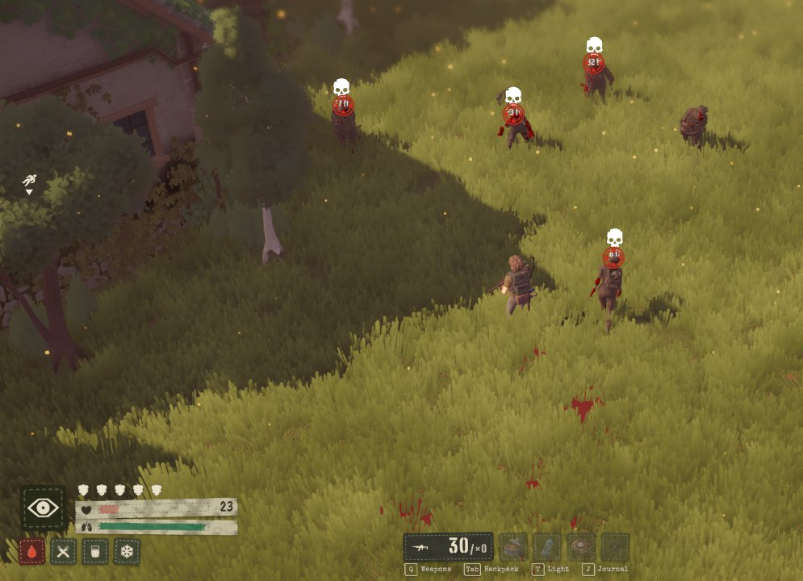
Day 71 · Fri 27 Nov
Total hours: about 14.2 h. Running total: 1204 h.
- Weapon carry reworked: one long gun on the left of the back (a bow counts as one), short guns on the back hip, a pistol on the right hip, a knife on the left hip and other melee weapons on the right of the back.
- The Q weapon wheel now has seven wedges, and the fake generated quiver was removed.
- Long guns now draw with a sling roll posed in Blender, play-tested in game.
- Gun stow poses were refined in Blender.
- All 48 guns were named, in three classes: Primary, Compact and Sidearm.
- Pipes in build mode: place gutters and down pipes while playing; pieces snap end to end and round corners, and a joined run becomes one climb line. A self-test passed on the first house.
- A revolver reload was posed in Blender with the developer: the crane swings open and rounds go in by hand.
Day 71 sorted out how the survivor carries weapons. Every weapon now has one place on the body, with a single long gun across the back and pistols and knives on the hips. Long guns come off the back with a sling roll the developer posed in Blender. Every gun in the game got a name and a class. Build mode can now place pipes that join into climbable runs, tested on a real house. A hand-loaded revolver reload was posed and reviewed.
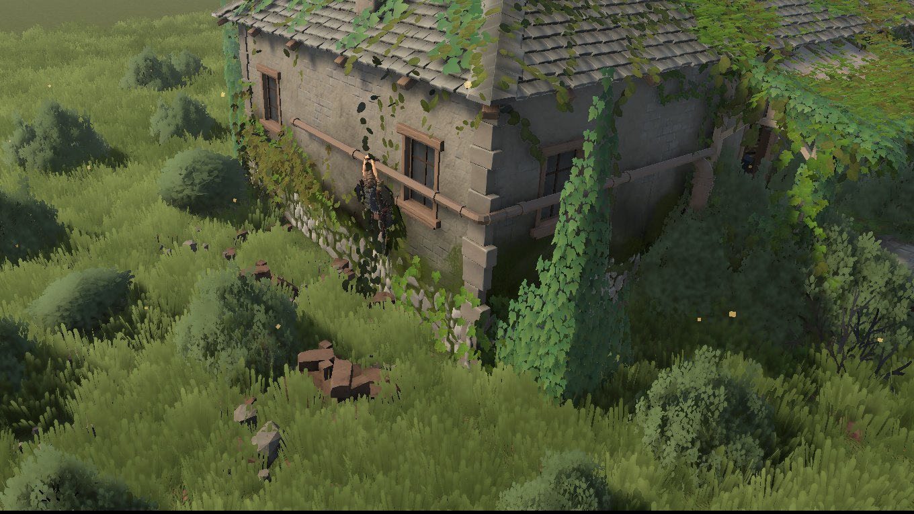
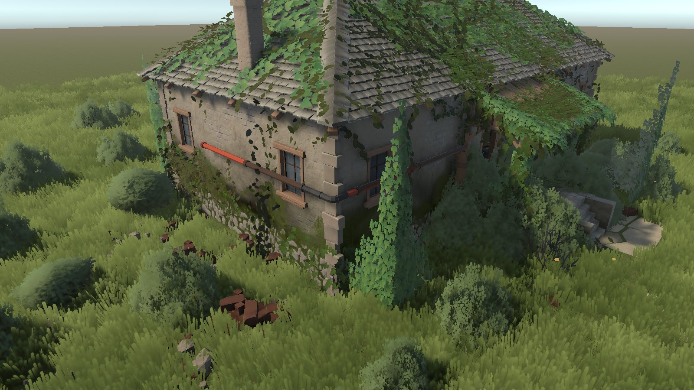
Week 10
Day 70 · Thu 26 Nov
Total hours: about 15.7 h. Running total: 1190 h.
- Clothing clipping: an audit ranked the causes, and the developer chose a new approach that removes covered cloth using a baked body cover map. Limb armour now always sits over the cloth.
- A general layer fit pulls every worn piece inside the pieces drawn over it, on the player and on NPCs.
- New clothing rules: one item per category, trousers roll up under knee or shin guards, and rolled sleeves show bare forearms.
- A face desk replaced the old character creator: edit face, hair and beard, then save the face and outfit together as one NPC. 285 face part icons were rendered.
- NPC Studio, a separate small app for designing NPCs, was reviewed and gained a design desk, a face and body page and an in-game walk view.
- A gold hip tasset now swings with cloth physics.
- Animals now share the humans' matte lighting, and glossy animal materials were fixed.
- Animations were fixed from the developer's play videos.
Day 70 went after clothes clipping at the root. After an audit of the whole equipment system, the developer chose a method that removes hidden cloth using a baked map of what covers what. Every worn piece now tucks inside the layer above it, on the player and on NPCs. A new face desk lets a survivor's face, hair and beard be designed and saved with their outfit. NPC Studio, a small separate app for building survivors, got its main pages. Animals were brought in line with the look of the people.
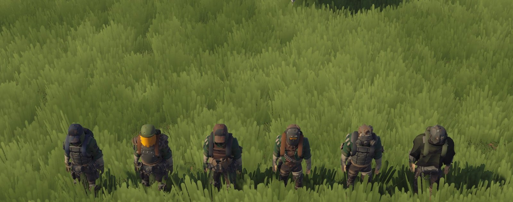
Day 69 · Wed 25 Nov
Total hours: about 16.2 h. Running total: 1174 h.
- Pipe climbing: fat down pipes became climb lines, and the pole climb on them was polished (hand placement, pipe size, entry clip, bent pipes) with clipping fixed.
- A pipe climb rail system was started, after a review of its risks.
- Pipe transition clips and a pipe-to-porch side jump were posed in Blender with the developer.
- Two-handed weapons are now stowed while sprinting.
- Every wearable icon was regenerated: 304 replaced and 198 new.
- Helmets no longer sit low over the face, and underwear no longer shows through trousers.
- More cloaks were built with cloth movement, and a rebuild glitch on the tattered cloak was fixed.
- A reset character button was added to the developer tools.
Day 69 turned the island's drain pipes into climbing routes. The pole climb on down pipes was polished until the hands sit on the pipe and the body clears it. The developer posed new transition clips in Blender, including a side jump from a pipe onto a porch. Two-handed weapons now go on your back when you sprint. Every wearable icon in the game was rendered again in one pass. Helmets, underwear and cloaks all got fixes.
Day 68 · Tue 24 Nov
Total hours: about 6.2 h. Running total: 1158 h.
- The Climb Lines tool was finished: gutter pipes now make the roof climb lines, and down pipes are marked separately.
- A tattered poncho was built as a wearable, with real cloth movement from Magica Cloth 2, and given to a Wayfarer NPC.
- The visual pass on the workshop houses continued.
- Red briefs showing through all trousers were traced to a draw-order clash; a fix was prepared.
Day 68 was a short day. The climb line tool was finished, with gutter pipes now driving where the player can climb along a roof. A tattered poncho went in as the first cloak with real cloth movement. Work on the look of the workshop houses carried on. A bug where underwear showed through trousers was tracked down and a fix prepared.
Day 67 · Mon 23 Nov
Total hours: about 11.2 h. Running total: 1152 h.
- The base layer is now hidden under outfits, and the base tank top and briefs were recoloured to a light brown.
- Speckled see-through noise on cleaned chest pieces fixed: 45 parts sunk under the cloth and 62 parts given fixed UVs.
- A per-item "puff" setting pushes a garment out so it covers what is worn under it.
- A climb line editor was built, then rebuilt the same day as a cleaner Climb Lines tool with points, lines, gable and porch copies and automatic ledge finding.
- Stray green roof lines were removed from the houses.
Day 67 cleaned up clothes and climbing data. Underwear and base layers now stay hidden under outfits, and a speckled see-through look on chest pieces was fixed part by part. A new per-item setting lets a garment sit slightly proud of what is under it. Climbing got a proper editing tool for the lines the player can climb along. The first version was replaced the same day by a cleaner one with copy and ledge-finding tools.
Day 66 · Sun 22 Nov
Total hours: about 19.2 h. Running total: 1140 h.
- Rifles and shotguns now block with the right mouse button; pistols, one-handed weapons, knives and fists dodge.
- HUD rebuilt: five shields, health, an emerald stamina bar and a dark visibility box. The round stamina bar was removed.
- Every hold or loading indicator now uses the same smooth white ring.
- Zombies got fair weaknesses: crouching can cancel a grab, a short tell before a leap, two attackers at most, and a missed leap leaves them open.
- A new slide (Sprint and C) trips zombies and people.
- Close-range gun melee on V was started.
- Aiming inside houses fixed, aiming at zombies on lower roofs improved, and ammo and arrow pickups made faster.
- Punches now cost stamina.
- Clothes: every item sorted into a category, a colour variant studio built with 1,185 colour-set icons, and a rule that every wearable must appear in some NPC's outfit.
- Hats and caps fall off when you land a big drop.
- Layered clothes: the lines and cuts were diagnosed; underwear, scarves, a high collar mask and backpack straps were cleaned up.
- Tied-up NPCs now go limp in the legs.
- A standalone NPC creator app was started.
Day 66 was the busiest day of the week for combat and clothes. Blocking and dodging were split by weapon type, and the HUD was rebuilt around five shields and an emerald stamina bar. Zombies were given fair tells and weaknesses so fights can be read and won. A new slide that trips enemies went in, and punches now cost stamina. The clothing system got a full sort, a colour variant studio and a rule that nothing goes unworn by NPCs. A standalone app for building NPCs was started.
Day 65 · Sat 21 Nov
Total hours: about 21.5 h. Running total: 1121 h.
- Zombies can now climb: an arm-drag climb was approved (jump, dead hang, haul up, flop over the lip, crawl away), and a version was built in Unity.
- Zombies no longer stick to walls.
- Gunfire now breaks the planks on boarded windows, and house doors can be shot through.
- Holding R refills a magazine with the left hand, four rounds per press.
- Aiming down from a rooftop no longer jitters.
- Human NPC melee slowed down: proper wind-ups, cooldowns and at most two attackers at once.
- A plan was made for blood, gunfire and fire effects.
- A plan was made to give human NPCs the same movement and weapon holds as the player.
- Every scene got one job: one for characters, one for buildings, one for the game.
- All clothing icons moved to the new Blender render style, with 118 new armour icons; feet were split so you can wear two different shoes.
- Grass no longer bends under the player in mid-air, and a roof climb on the burned house was fixed.
Day 65 gave the zombies new reach. They can now climb walls with a heavy arm-drag haul, and they no longer get stuck against them. Guns became part of the world, breaking window planks and shooting through doors. Reloading got a hands-on magazine refill, and aiming down from roofs was steadied. Human NPCs were made fairer in melee, and a plan was drawn up to give them the player's own movement. The inventory icons moved to one consistent rendered style.
Day 64 · Fri 20 Nov
Total hours: about 9.5 h. Running total: 1100 h.
- Climbing polish continued, both directly in Unity and in Blender: climbing down, and climb positions refined while playing.
- The cause of a hand flicker during climb moves was traced and a fix planned.
- Climbing sounds now follow the body, and a new roof contact sound was made in ElevenLabs.
- One- and two-handed melee sprints swayed because they borrowed the bow's sneak-sprint spine; they were rebuilt on the right spine.
- The sprint clip was exported to Blender for the developer's pose fixes.
- Inventory: look B, a "lit slot" that shows what is visible on you, was picked for the bag.
- A drivable quad bike was set up in the developer tools.
- A free video motion capture tool was tested: fine for rough previews, but its licence rules it out for the shipped game.
Day 64 was a climbing and movement day. Climbing got another polish pass, in Unity and in Blender, with climbing down and the hand positions as the main targets. Sounds now follow the body as it climbs, and a roof contact sound was generated. The melee sprint was fixed after its sway was traced to the wrong spine animation. A bag layout that lights up what you are wearing was chosen. A free video motion capture tool was tried and set aside for licence reasons.
Week 9
Day 63 · Thu 19 Nov
Total hours: about 8.5 h. Running total: 1090 h.
- NPC dialogue writing tool built: 16 NPCs ready, three replies per line, one for each honour level.
- New NPC voices chosen in ElevenLabs, including a more neutral female voice and a second female voice.
- Rule set: every NPC interaction depends on the player's honour, with three versions always; the player starts Pragmatic.
- Climbing polish: kip up onto a sill, feet planted on the beam, a feet-first drop from the roof edge, and hands pinned to the ledge.
- The developer posed a sill-to-window-top climb in Blender, now in the game.
- A crouch-and-spring climb onto the roof edge was tried.
- Houses: the old houses were parked; work moved to the new workshop houses, starting with H02.
- Unity editor memory cut further.
- A meeting mode for scared NPCs was staged: the player walks and the camera frames both people.
Day 63 put words and climbing in focus. A new tool for writing NPC dialogue went live, with every line written three ways to match the player's honour. New voices were picked for the male and female NPCs. Climbing got a polish pass, including a clip the developer posed by hand in Blender that now plays in game. The old houses were set aside and work moved to the new workshop houses. A calmer way of meeting frightened NPCs was staged, with the camera framing both people.
Day 62 · Wed 18 Nov
Total hours: about 10.7 h. Running total: 1082 h.
- Locomotion rebuilt with root motion and foot phase, and a combat stance set: a lifted weapon arm standing, a full crouch with a weapon.
- Right mouse dodges automatically with one-handed weapons, knives and fists, and blocks with two-handed weapons.
- Tackle remapped and persuade added on Shift plus E.
- NPC talk reset: old NPC dialogue removed, strangers are scared but can be calmed, and lines will be written fresh.
- Honour system designed: the player is Notorious, Pragmatic or Honourable based on their actions, and it changes their lines and how NPCs react.
- Eight NPC archetypes defined for writing lines and behaviour.
- Ghillie hood picked and a stealth bonus staged: harder to see when low and still in grass.
- Hood up or down added to the self menu.
- Unity editor memory use cut.
Day 62 rebuilt movement and reset how NPCs talk. The player's walk and run now come from root motion, and the combat stance and right-mouse dodge and block were settled. The developer judged NPC conversations fake, so the old dialogue was cleared to start again with scared strangers who can be talked down. A new honour system will track whether the player is Notorious, Pragmatic or Honourable and change how people react. Work on lines will follow eight archetypes, from loners to faction fighters. The ghillie hood was chosen, with a stealth bonus in grass.
Day 61 · Tue 17 Nov
Total hours: about 8.7 h. Running total: 1071 h.
- The scavenged HUD went live and was reviewed from a play recording, with three polish fixes noted.
- Stencil damage numbers mocked up; decided they show only the player's own hits.
- 181 melee, bow and throwable weapon icons rendered for the bag; gloves now show as worn.
- Head items split from their glasses, masks and respirators.
- Inventory: NPC clothing loot, small and big game, a head torch and NPC quivers installed.
- Zombies now get knocked back on hit; melee no longer swings while looting.
- Melee fight stance and unused transition animations wired in.
- Player locomotion animator rebuild started.
- Large old files were moved off the shared folder.
Day 61 finished the HUD and filled the inventory. The new scavenged HUD went live and was checked against a recorded play session. Damage numbers were mocked up in a stencil style and limited to the player's own hits. Weapon icons for the bag were rendered in one pass, and head gear was split from face gear. The inventory gained NPC clothes, game animals, a head torch and quivers. Combat felt more physical with zombie knockback and a proper fight stance.
Day 60 · Mon 16 Nov
Total hours: about 12 h. Running total: 1062 h.
- Overgrown roads baked onto all 22 road tiles, with frame rate unchanged at about 83 fps.
- Body-search panel tints mocked up for the inventory.
- Off-screen gunshots now show as bursts on the screen edge, red near and amber far.
- Archer movement: no running while drawn, a 5.3 m/s sneak run, and a crouch sprint.
- Arrows left in the world get pickup markers.
- Dropped pistol magazines can be picked up; casing pickup 40% faster.
- A hooded grass ghillie cloak was mocked up in three versions.
- F8 worn and stowed positions refined; terrain tools and lag reviewed.
- First inventory and menu packages installed; one failed to compile and was rolled back.
Day 60 locked in the world look and tuned the archer. The overgrown road look was baked into every road tile with no cost to frame rate. Gunshots from off screen now show where they came from on the screen edge. The bow got calmer movement rules, a sneak run and a crouch sprint, and spent arrows are marked for pickup. A grass ghillie cloak was mocked up for stealth play. The first inventory packages went in, with one rolled back after a compile error.
Day 59 · Sun 15 Nov
Total hours: about 13.7 h. Running total: 1050 h.
- Three more towns installed: west (114 houses), north east (30) and south (27), each with its own road.
- Watering holes got dark, murky water; trails turned into worn brown dirt paths with boot prints.
- Soft ground: boot prints press into muddy streets.
- Roads now get overgrown: grass reaching the asphalt and creeping across it.
- HUD redesign: three directions mocked up; the developer picked a mix of a scavenged tape-and-canvas look with a round stencil minimap.
- Inventory look C chosen: bag on the right, body or loot panel on the left; twelve screens mocked up.
- Equipment icons re-rendered from the real models, one item per icon, with fixed worn colourways.
- A review round: about twenty focused threads checked the last three days of work, lag and runtime cost.
- Grey building shells, boulder colours, camera blur and the minimap were reviewed.
Day 59 was the busiest day of the period. Three more towns went into the world, and the roads and trails were dressed to look old: grass creeping over asphalt, muddy prints in the streets and murky watering holes. The developer chose a new HUD direction, mixing a scavenged tape-and-canvas look with a clean round minimap. A full inventory layout was picked and mocked up across twelve screens. Item icons were rebuilt from the real models with one item each. A large review round checked recent work for bugs and lag.
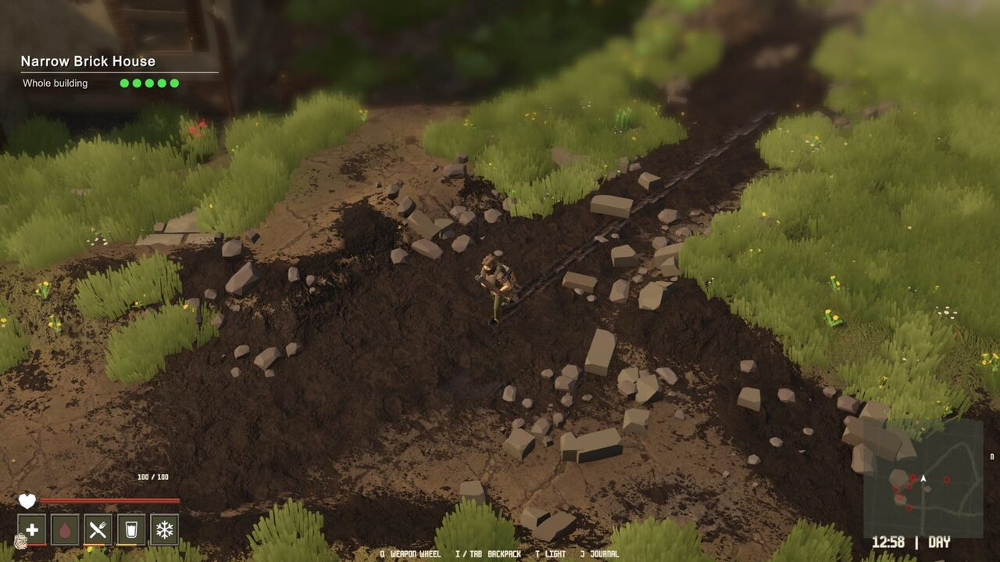
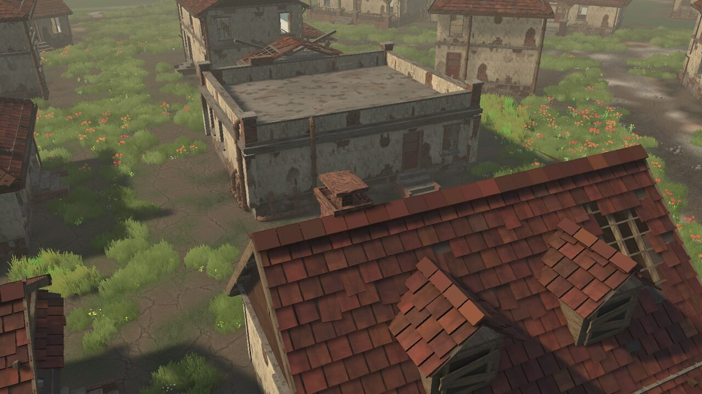
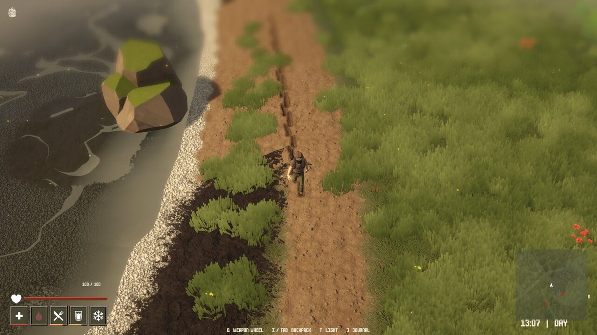
Day 58 · Sat 14 Nov
Total hours: about 10.2 h. Running total: 1037 h.
- World plan for Build 1.1 drawn from the developer's sketch: a river from a mountain lake to the coast, 6 watering holes, 9 bridges, 10 fords.
- New roads: four-lane highways and two-lane roads with worn asphalt, plus about 35 km of dirt trails.
- A wreck checkpoint on the long highway bridge, with a jack-knifed bus and one way through on foot.
- First new town built in the north, 140 houses; three more towns planned.
- Pixel UI kit redrawn, with the first 48 item icons cleaned to pixel art.
- Every in-game menu exported for a redesign.
- Military outfits converted onto the main character body: soldier colourways, bomb suit, pilot, riot, hazmat and ghillie.
- Horse stamina reworked; animal butchering for meat started.
- Equipment slots and wardrobe overhauled; dog companion and Listen mode work wrapped up.
Day 58 reshaped the world map. The developer sketched rivers and the team turned them into a plan with watering holes, bridges and fords, then added highways, roads and trails. The highways, trails and the first new town went into the world the same day, with a wrecked bus blocking the long bridge. The interface got a cleaner pixel kit and every menu was exported for a redesign. Military outfits were converted onto the shared character body in several colourways. Horse stamina and butchering moved forward too.
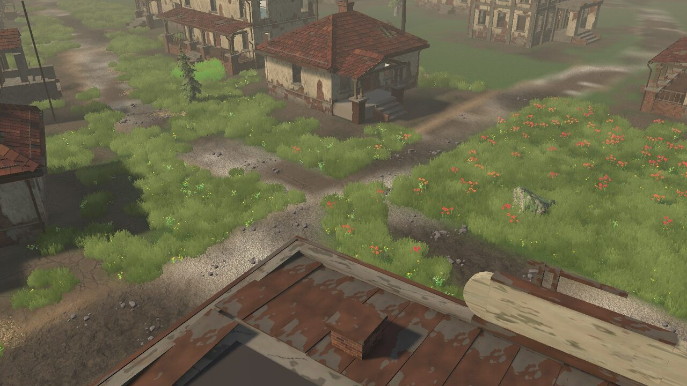
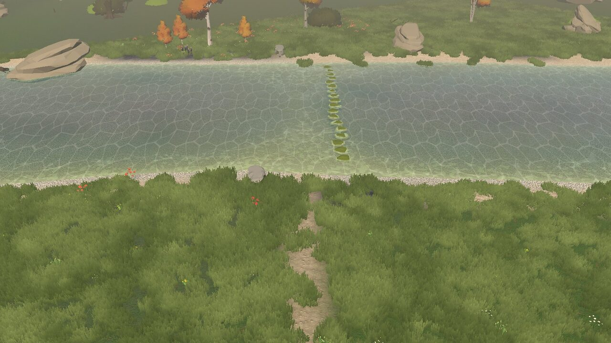
Day 57 · Fri 13 Nov
Total hours: about 11 h. Running total: 1026 h.
- Plan for a full seven-day survival beta in Build 1.1, with NPCs, zombies and animals live and food from hunting.
- Hostile factions built; the first clash was fought out in a test.
- NPCs now walk round tents, barrels and cars and vault fences instead of walking over props.
- NPC hunting got sneaking, longer trips and sleeping rough.
- Gun inspect moved to hold R; tap R reloads.
- Back-stowed weapons now sit around the worn backpack.
- Zombie finishers: tap F in range, a quick weapon swap and a stealth-only rule; 17 finisher pairs set up for posing in Blender.
- Hit stagger and parry fixed for NPCs.
- Per-frame memory garbage measured and cut; dog companion and Focus mode redesigns drafted.
Day 57 pointed everything at a seven-day survival beta. Hostile factions were built and fought their first test clash. NPCs stopped walking through props and learned to sneak while hunting and to sleep out on long trips. Guns gained a hold-to-inspect, and weapons on the back now sit neatly around the backpack. Zombie finishers were reworked so a tap of F in range does the job, with each pair ready to be posed by hand. Memory waste per frame was cut, and the dog companion and night Focus mode got design drafts.
Week 8
Day 56 · Thu 12 Nov
Total hours: about 9.2 h. Running total: 1015 h.
- NPC layer 1 fixes installed: talk or order someone down when aiming, NPCs walk and watch, corpses are noticed and fled from.
- Dead-body reaction playtest passed.
- NPC layer 3 rescoped: a wandering band of four, each with their own tent, pitching around one fire.
- Recruited NPCs (up to three) follow and protect the player; band-mates share food with those in need.
- Band-mates only fight back if they see a member get hurt.
- Scrap suppressors finished: soda can, bottle and oil filter; a flashlight is now the gun torch.
- A brass marker shows dropped casings.
- NPC voice line writing, radio calls and grass concealment work continued.
- Free space was cleared on the main drive.
Day 56 shaped how groups of survivors behave. Layer 1 fixes went in, so NPCs react sensibly when a gun is pointed at them and run from bodies. The developer rescoped layer 3 into a wandering band of four with their own tents, which the player can recruit into a protective team. Bands share food among themselves and only join a fight they actually witness. On the gun side, scrap suppressors and a gun torch were finished and dropped brass got its own marker. Voice lines, radio calls and hiding in grass moved forward in parallel.
Day 55 · Wed 11 Nov
Total hours: about 9.5 h. Running total: 1006 h.
- Nature pass across the world: dark grass-green ground under every grass patch instead of brown mud, on all 64 tiles.
- Grass got height and colour drifts and off-grid clumps.
- Flowers, trees and bushes now follow nature rules: drifts of poppies, size variety and saplings, bushes by rocks, clearings in dense forest.
- A crisscross look in the grass was traced to the camera-facing bend; with it off, blades stand upright.
- Snow: footprints under each foot, ruts behind vehicles and animals, snow on rock tops, blood showing on white ground.
- Drafted a zombie danger map: density rises toward the capital, plains stay light, sleepers lie in tall grass.
- Long-press F opens a new self menu; the player can sit anywhere to rest.
- Four hide-level icons show how hidden the player is in grass.
- Night lighting, moonlight and NPC survival tests began.
Day 55 was the big nature day. Every terrain tile got green ground under its grass, and the grass itself gained natural drifts in height and colour. Flowers, trees and bushes were re-placed by simple nature rules, so poppies gather in patches and forests open into clearings. The snowy north got footprints, tracks and blood that shows against the white. A first zombie danger map set where the dead gather, thickest around the capital. The player also gained a self menu for sitting and resting, and icons that show how well they are hidden.
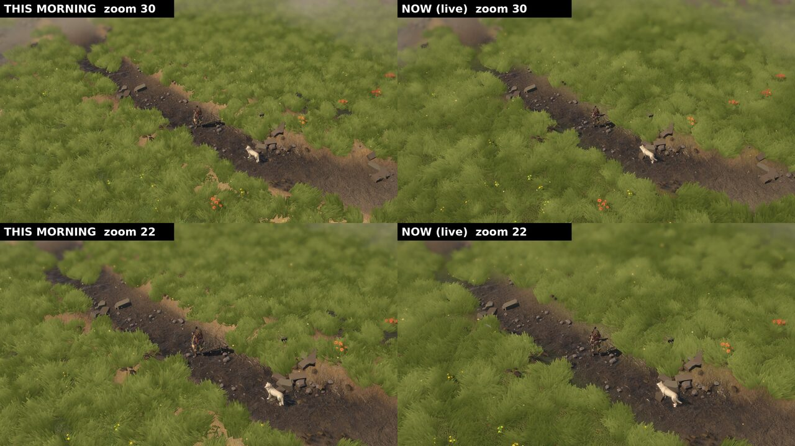
Day 54 · Tue 10 Nov
Total hours: about 8.7 h. Running total: 997 h.
- Camp kit: pitch a tent and a fire pit, light the fire with fuel, crawl in, sleep, and wake at the door.
- NPC layer 2 (body): survivors pitch their own tents around a fire, fetch water, hunt and carry game back to camp.
- A label view shows each NPC's need and current task.
- NPC layers 1 to 5 planned; layer 1 dialogue made more believable.
- Two Synty demo landscapes, an alpine lake and a meadow forest, were cut, flattened and joined to the test map on a 400 m grid.
- The capital's pavements were restored in the world build, 519 road and sidewalk pieces with grass cleared.
- Ten generic clothing icons made.
- Beta V2 planned.
Day 54 made camps real for both the player and NPCs. The player can now pitch a tent and fire pit, light it, crawl inside and sleep until morning. NPCs do the same on their own, pitching tents around a fire, then heading out for water and game and carrying it back. A label view shows what each NPC needs and what it is doing about it. The test map grew with an alpine lake and a meadow forest fitted to its edges. In the main world, the capital got its streets back.
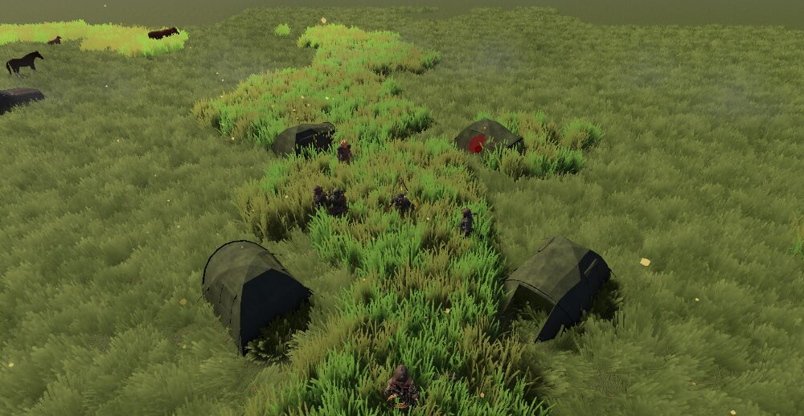
Day 53 · Mon 9 Nov
Total hours: about 12.3 h. Running total: 988 h.
- Shirts merged with their sleeves: sleeves match the top's colour, with torn-sleeve variants.
- Eight Modern Thugs outfits added to the wardrobe.
- NPCs can be looted down to their underwear.
- Dead NPCs rise as zombies; one with a leg cut off rose as a crawler three minutes later.
- Risen NPCs get cold grey skin, and blood splats are round instead of square.
- Shot NPCs show wound blood; NPCs react to gunshot wounds.
- The first camp in the test map: a tent and a bonfire.
- Inventory V2 designed in mock-ups: survival, weapons, wear, mods and craft tabs, plus a character screen and Q wheel.
- Point-blank shots fixed, item inspect moved to E, a spinning-in-place bug fixed, and a perks list for gun charms filled.
Day 53 joined clothing, death and inventory. Shirts and sleeves were merged so outfits read as one piece, and a gang outfit set was added. Dead survivors can now be stripped of everything, and if left alone they rise again as zombies, even as crawlers if they lost a leg. A first camp with a tent and fire went into the test map. The new inventory was laid out across a full set of mock-ups, from the bag and wear tabs to a character screen with an injury chart. Smaller fixes covered point-blank shots, inspecting items and a character spinning on the spot.
Day 52 · Sun 8 Nov
Total hours: about 11 h. Running total: 976 h.
- Survivors got cloth physics on long hair, so hair hangs over capes, falls when lying down and droops when carried.
- A new tarp wrap cape in eight colours keeps one shape whatever weapon is on the back.
- Cloaks limited to a few NPCs.
- Every control and key conflict was mapped.
- A search animation for downed NPCs was found.
- New NPC look and feel work and the NPC layer 1 danger and talk thread began.
- The Blender animation workflow was set up for fixing clips by hand.
- A master item spreadsheet was started.
Day 52 turned to how survivors look. Long hair now behaves like cloth, resting on capes, falling to the floor when an NPC lies down and hanging properly when someone is carried on the shoulders. A new tarp wrap gives survivors a cape that keeps its shape over any weapon, in eight colours. All controls were mapped to catch key clashes before more features land. Work began on how NPCs sense danger and talk, and a master spreadsheet of every item was started. The day set up the big NPC push that followed.
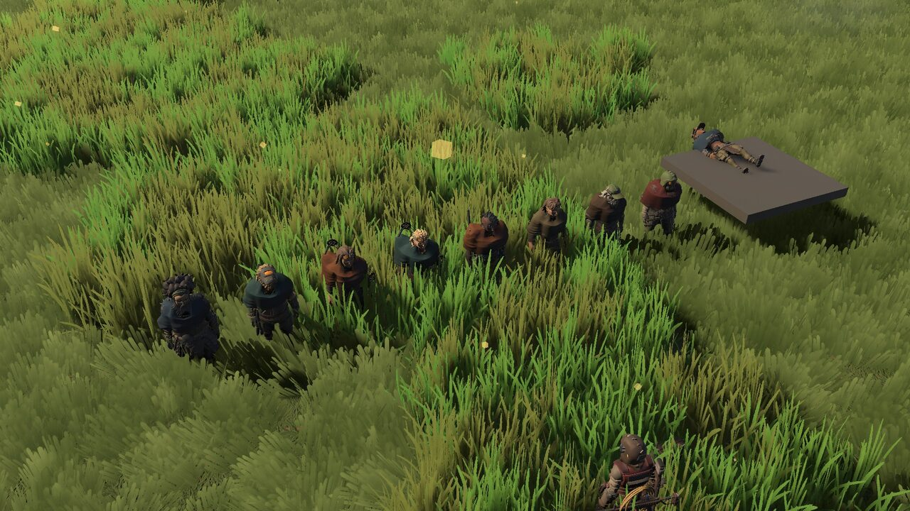
Day 51 · Sat 7 Nov
Total hours: about 9.2 h. Running total: 965 h.
- Every glowing or fantasy part was deleted from the animals; they are plain animals now.
- Human lasso fixes: silent deaths, tackle range, the walk-up before a kick and tie, and NPCs stowing or dropping bows.
- New moves on captured people: a front kick, a leg grip, kick out cold, a limp cuff, and a punch that pins.
- One lasso coil on the back, with equip and put-back.
- Holding right mouse unarmed no longer plays a boxing loop.
- Eight new motion-capture clips arrived and were cut for carrying and tying people.
- Rule agreed: every exported clip starts with the hips over the origin.
- Rule agreed: every F8 tuning panel previews the whole clip on a loop with both bodies moving.
- Fixing the pin and knockout poses took about two hours, longer than hoped.
Day 51 kept refining how the player deals with captured people. The animals lost every glowing or fantasy part, because the developer wants them to look like normal animals. The human lasso gained kicks, grips, a knockout, a limp cuff and a pinning punch, with a single coil now carried on the back. Eight new motion-capture clips came in for carrying and tying people. Two working rules came out of a slow session on poses: clips must start centred on the hips, and every tuning panel must preview the whole move with both people animating. The pose fixes ran long, and the developer asked for faster turnarounds.
Day 50 · Fri 6 Nov
Total hours: about 6.5 h. Running total: 955 h.
- Lights: tap F turns a torch or lantern on or off, hold F moves it between hip and hand.
- Guns: fire rates stay as they are, with ammo use as the trade-off; scrap suppressors (bottle, soda can, tin) are lightly craftable.
- Corpses no longer deform or float when hauled; dragged corpses push grass aside like the player does.
- Lasso hotfixes in three rounds, including a single-stab kill that leads straight into butchering.
- Fireman carry: a tied animal can be lifted onto the shoulders, put down, laid on a horse, and carried dead.
- Each animal's carry pose and pickup can now be tuned in the F8 tool.
- 29 animal voices were wired to the lasso.
- Lassoing humans started: a lassoed survivor is yanked face down, can be knocked out, cuffed, carried and laid across a horse.
- A rough feature tracker with completion percentages was started.
Day 50 spread across lights, guns, animals and people. Torches and lanterns now switch with one key and move between hip and hand. Hauled corpses stopped bending and floating, and the lasso got three rounds of fixes, including a clean kill that leads into butchering. Animals can now be carried on the shoulders and laid across a horse, each with its own tuned pose. The biggest new feature was lassoing humans: survivors can be roped, pulled down, knocked out, cuffed and ridden off with across the saddle. The developer also asked for a rough tracker to see how complete each feature is.
Week 7
Day 49 · Thu 5 Nov
Total hours: about 5 h. Running total: 949 h.
- All 16 test animals passed the new rope stages loop with no errors, from a goat to a 700 kg bull.
- Fine-tuning approved: a 5 m haul for big animals, a floor on drag damage, faster pets, and rope creak, twang and shake sounds.
- Animals now build trust: petting and feeding calm them over time.
- A playtest found the lasso loop too complicated with poor results.
- New plan: predators fight back like bears, prey runs like the boar, and the lasso keeps only three scripts.
- Prey over 40 kg now use a timing-bar minigame instead of a tire-and-run loop.
- All 67 non-bird animals can now be lassoed, with foxes, rabbits and raccoons added.
- Ropes can be tied round a tree or thrown over a branch, for example to hang a roped zombie as a noise lure.
- Grass now bends around all live animals as well as corpses, and dragged corpses leave a pressed trail.
Day 49 tested and then simplified the lasso. Every animal passed the new rope stages, and a batch of fine-tuning on hauling, drag damage, petting and rope sounds was approved. A real playtest, though, showed the loop was too complicated and did not feel good. The developer split lassoable animals into two simple groups: predators that fight and prey that flee. Heavy prey got a timing-bar minigame, and the number of animals that can be roped grew to 67. Grass also learned to bend around every living animal and to show a trail where corpses are dragged.
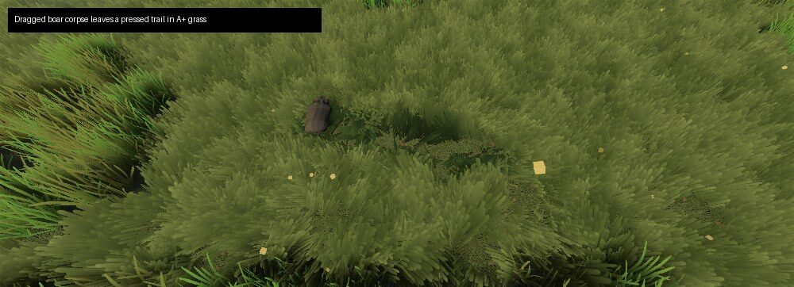
Day 48 · Wed 4 Nov
Total hours: at least 4 h (measured hours not yet recorded). Running total: 944 h.
- Eleven farm animals were re-rigged onto the same skeleton system as the wild animals, with no stretching in any clip.
- A wolf and dog version of the rope fight was built.
- The 40 kg rule: heavy catches drag the player, who digs in and skids toward the animal.
- Calming: hold E close to a roped animal to raise both hands and say whoa, then pet it when it settles.
- Two animations drive calming: a reach for the approach and a pat for success.
- Decided the calm animations play near the animal, not glued to it, because pinned hands looked wrong.
- The full loop was set for testing: lasso, struggle, reel in, calm, pet, or the animal bolts and drags you.
- The F9 test menu now spawns the re-rigged farm animals.
Day 48 brought the farm animals into the lasso system. Cows, pigs, goats and the rest were moved onto the same skeletons as the wild animals so they share the rope fight, and a wolf and dog version followed. Heavy animals now drag the player, who digs in their heels and slides. Calming became a hands-on moment: get close, hold E to soothe the animal, then pet it when it gives in. The developer kept the animation simple, with two clips and no hands glued to the animal. The complete lasso loop was ready to test the next day.
Day 47 · Tue 3 Nov
Total hours: about 5.2 h. Running total: 940 h.
- Lassoing on foot: a roped boar now fights in a fixed routine, backing away, whipping left and right, jumping and slipping head down.
- The developer's first reaction to the boar routine was very positive, so it became the template for other animals.
- The player now always faces a roped animal while it fights, and reels it in hand over hand.
- The left hand now grips the rope line, so the rope rests in both hands.
- A new rope-pull clip was brought in and tuned by hand in the F8 tool, with feet planted and knees bent.
- A taut-rope hold now uses an upper-body pose only, so the legs can still walk.
- Antlers on deer and moose were floating; they now follow the head.
- Unity ran out of memory and crashed while reimporting two clips; it came back with no lasting damage.
- Overnight, every animal got the struggle routine, failed calms on big animals drag the player about 20 m, and bears, cougars and tigers attack the player when roped.
Day 47 was about lassoing animals on foot. A boar on the rope now puts up a proper fight, backing off, whipping and jumping, and it looked good enough to roll out to the rest. Reeling in turned into a hand-over-hand pull with the player facing the catch and both hands on the rope. A rope-pull animation was tuned by hand, and a lighter upper-body hold lets the player keep walking on a taut line. One memory crash interrupted the work but nothing was lost. By the end of the night every animal had the routine, big animals could drag the player, and predators would turn on them.
Day 46 · Mon 2 Nov
Total hours: about 11 h. Running total: 935 h.
- Binocular marks now work on animals too: a bear icon with the distance in feet.
- Loot now shows small pointers tinted by rarity, with the item's icon, instead of light beams.
- Tall grass presses down under corpses and dropped items, so bodies sit in the grass instead of floating on top.
- New Animal View in the F8 tool: pick any animal, scrub through its clips, play, pause and step.
- Found that most world animals render too dark because of a shader bug; tested baked replacement skins in three grimier palettes.
- Set out an animal roadmap: smoother movement, shared behaviours, lasso uses and hunting, built in the test map first.
- The test map gained a lab corner where the player can drive a sedan and ride a motorbike.
- The lasso throw, spin, flight and cinch were checked frame by frame and the horse look fixed.
- Unused project files were archived to a second drive to free space.
Day 46 opened the animal push. Marks from the binoculars now cover animals as well as zombies, and loot got cleaner pointers with item icons in place of glowing beams. Grass now flattens under corpses and dropped gear, which makes kills and loot read much better in tall fields. A new Animal View lets the developer inspect every animal clip, and it showed that most world animals were rendering far too dark because of a shader bug. Replacement skins were baked and compared, and a roadmap was agreed for how animals should move, behave, get lassoed and get hunted.
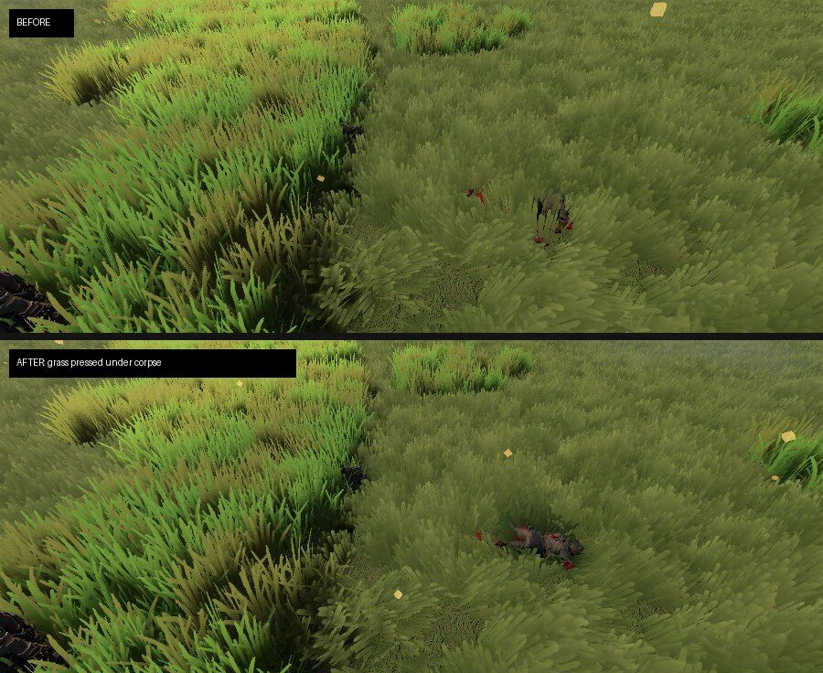
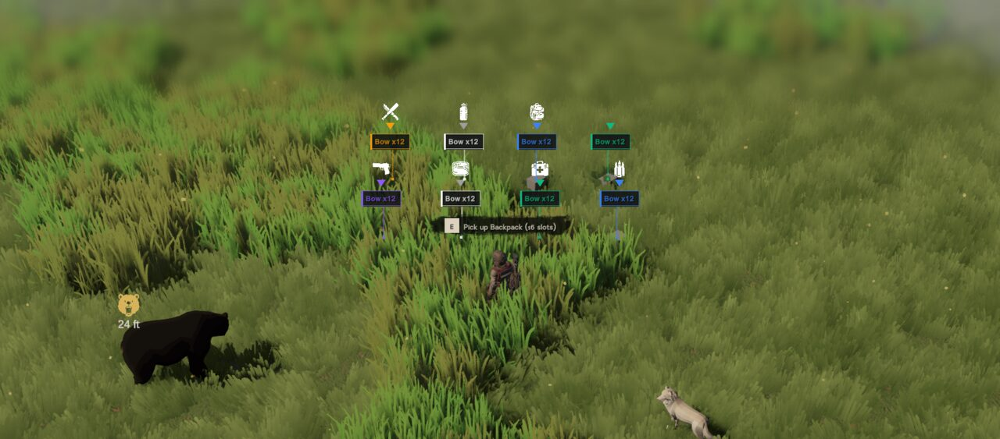
Day 45 · Sun 1 Nov
Total hours: about 7.9 h. Running total: 924 h.
- Guns can now take limbs off: head, waist, arms and legs, on kill shots and on shots into corpses.
- Melee keeps only head and waist cuts, which looked best; arm and leg cuts were dropped for blades.
- Guns now hit zombies at point-blank range instead of passing through them.
- Binoculars mark zombies with a skull and distance in feet, up to 5 at once.
- Marks stay until the zombie dies or the player is 250 m away; off-screen marks sit on the screen edge with an arrow.
- Scoped guns let the view slide out by scope tier: x2 to 30 m, x4 to 50 m, x8 to 70 m.
- Melee against crowds is more fluid: a heavy swing can be cancelled into a dodge or shove, and cleaves up to 3 zombies.
- Found why staggered zombies still hit back: their attack never checked the stagger. Hits now hold them off for 0.8 s.
- New defensive guard for two-handed weapons: V toggles a crouched overhead guard, front blocks, click to shove, 4 hits break it.
- One-handed, dagger and unarmed get an evasive stance instead: an automatic hop back and a timed parry for a bonus hit.
- Every bag item now has an icon, made with Gemini.
- SMG5 and AR10 were recoloured; capes tested in a crouch, and weapon regrips and back-stow positions set.
- Still open: the two-handed guard pose and testing the scope tiers in Play.
Day 45 was mostly about combat feel. Guns gained full dismemberment while melee kept only the head and waist cuts the developer liked, and close-range shots now land. The biggest melee fix came from finding that staggered zombies could still swing back, so hits now hold them off and heavy swings can be cancelled into a dodge or shove when a crowd closes in. Two new stances followed: a crouched overhead guard for two-handed weapons and an evasive hop and parry for everything lighter. Binoculars and scopes became scouting tools, marking zombies with distance and letting the view reach further the stronger the scope. Next up is finishing the guard pose and testing the scopes in Play.
Day 44 · Sat 31 Oct
Total hours: about 16.2 h. Running total: 916 h.
- New guns: the Apocalypse Weapons pack (54 modular guns) will replace all 75 old guns, including magazine-swap reloads. Old guns are retired, not deleted.
- A gun setup menu was built, and each gun now has its own scope and aim adjuster; a nose-down tilt on the new guns was fixed.
- Pistol: a locked-forward hold with stiff arms, where the body turns to aim.
- Capes: Magica Cloth 2 now drives the cloak motion. A code-built stylised cape was accepted, with 5 zombie variants, and the Marvelous Designer cloaks were retired.
- A capelet and a circle poncho were added for in-game trials.
- Two-handed melee now uses Malbers axe animations: a combo, a lunge and a back roll. Found that the test player had no melee component at all.
- 145 melee weapons sorted into 7 categories: Daggers 32, Blades 29, Axes 21, Light blunt 35, Heavy blunt 19, Polearms 4, Fist 2. Bats, clubs and planks stay two-handed; daggers get real stabs.
- Back-stowed items: the positions the developer set by hand are now the defaults. It looks messy on purpose, like a heavily loaded nomad.
- Melee review against zombies: random knockdowns, every hit landing at the same height, no wall check and no stamina. A fix order was proposed.
- New rule: anything new must retire the old system it replaces, so nothing conflicts.
- PSX asset review: keep the audio and small props, skip the buildings and characters.
Day 44 was a big systems day. The developer chose a modular gun pack to replace every old gun, and the setup tools, per-gun aim adjuster and a new pistol hold went in the same day. Cloth simulation finally gave the cloaks motion, and a simpler code-built cape replaced the heavier cloak experiments. Two-handed melee moved to proper axe animations after it turned out the test player had no melee component. All 145 melee weapons were sorted into seven categories, and a review of melee against zombies listed what makes fights feel random. The developer also set a rule that new systems must retire the old ones they replace. Next up is fixing those melee problems in order.
Day 43 · Fri 30 Oct
Total hours: about 8.3 h. Running total: 900 h.
- Equipment system planned and started: five wearable layers built from Sidekick outfit slices, on a fixed base body.
- The developer picked a long poncho; the neck wrap became its own separate piece.
- Cloak re-drape with the arms down now works, which removes the stiff T-pose shape.
- The developer asked for five very high quality cloaks in the F9 clothes menu, with natural torn edges, no odd folds and a snug scarf.
- Feedback: the cloaks were "lacking any kind of motion"; the Drifter cloak was the favourite.
- Cloth simulation options were researched to give the cloaks real movement.
- Still open: cloak motion.
Day 43 was mostly clothing. The equipment system was laid out as five wearable layers on a fixed base body, using outfit slices from the Sidekick character kit. Cloak work continued from the day before: the developer chose a long poncho, the neck wrap was split off as its own piece, and a new way of draping with the arms down fixed the stiff shape. Five higher quality cloaks were asked for and built, but they did not move at all, which the developer called out. The Drifter cloak was the one worth keeping. Next up is real cloth motion.
Week 6
Day 42 · Thu 29 Oct
Total hours: about 8.3 h. Running total: 891 h.
- Quick wheel: the mouse wheel now flips between the weapons and items pages (it used to be right click); right click on a hovered weapon toggles its attachment.
- Lantern: while lit, the glass glows warm white, and the lantern is held out by the left arm only, so the right arm keeps walking.
- Jump gravity made heavier everywhere after the developer's jump test, with a cleaner hand-over from jump to fall.
- Rifle carry was "too static, stiff": the run now blends in a motion-captured upper-body carry, and the shotgun gets a pump.
- Strafe fix: aiming one way while walking another no longer twists the waist out of shape.
- Prone aim catch-up: aiming behind while prone lowers the rifle, turns the body by crawling, then raises the aim again.
- Shoulder pads removed from the saved player character at the developer's suggestion.
- Cloaks: the long cape is being replaced by a short ragged cloak over the left shoulder; a shawl built in Marvelous Designer was liked, and variations of it were started.
- Still open: cloak flicker and the vest poking through.
Day 42 was about how the player feels to move and hold things. The developer jump-tested the character and asked for heavier gravity, which went in everywhere. The rifle carry looked stiff, so the run now blends in a motion-captured carry, and two aiming bugs were fixed: the twisted waist when strafing and the rifle snapping round when aiming behind while prone. The quick wheel and lantern got small control and look changes. Late in the day the cloak work began, with a short shawl the developer liked and variations built from it. Next up is a cloak that moves and does not clip through clothing.
Day 41 · Wed 28 Oct
Total hours: about 20.2 h. Running total: 883 h.
- Destroying a ridden horse no longer leaves the player's parts disabled; the rider now follows the saddle instead of being attached to the horse.
- The spawn-horse dev tool makes a ready brown horse with wander, bond and riding built in.
- Low-visibility domes are saved per scene in their own file and keep their size, stretch and rotation.
- Dome stealth: crouched or prone and still inside a dome, zombies see the player from about 3 m instead of 20.
- Tested with a zombie 8 m away: a crouched player in a dome was never noticed, 4 of 4.
- Standing in a dome delays an attack from about 4 s to about 6 s; a zombie already chasing keeps chasing.
- Automated tests were overwriting the real loot save, piling up 49 test drops.
- Every automated run now saves to a separate test folder, and the real save is backed up before each Play.
- Still open: the kick leg snap, sill grab timing, grenade throw speed and the torch floor-below check.
Day 41 ran without the developer at the PC, with a second Claude directing the threads and critiquing each one's output. The horse bug from the evening before was fixed: the rider now follows the saddle each frame, so destroying a ridden horse leaves nothing switched off. The horse and low-visibility dome tools were finished and now survive scene reloads. Domes gained the developer's stealth rule, so a player crouched and still inside one goes unseen beyond a few metres, and it held up in tests from two directions and at the edges. The biggest fix was making tests safe: automated runs had been writing into the real loot save, so every test now saves to its own folder and the real save is backed up before each Play. Next up are the kick that snaps the leg and the checks that are still untested.
Day 40 · Tue 27 Oct
Total hours: about 10.8 h. Running total: 863 h.
- Window sill climbing eased, 1.5x faster, and no build-up when sprinting.
- Upstairs windows give one "Lunge out" action: dive and roll over drops up to 2.6 m, grab the sill and hang over longer ones.
- One central E system for doors, pickups, searching, talking, mounting, plank kicks and window entry; 14 scripts moved onto it.
- Two or more actions in reach open a small choice list; two list bugs found in testing and fixed.
- Climbing in through an open window works standing or crouched, and "Climb in and search" walks to furniture just inside.
- Big bushes hide the player: zombie sight drops to under half inside one.
- Binoculars raise once and hold, pan up to 45 m, with a real model.
- Standing animations for eating, drinking, pills and bandaging.
- Recoil capped: rifle groups from about 2 m to 46 cm at 10 m. The sniper is bolt-action.
- Rifle aim pose fixed (it was 140 degrees off); reloading plays fully and continues while sprinting.
- Torch lights the floor below from upstairs. Roof-edge shooting hit 6 of 7 targets, up from 0.
- Bow rebuilt as a straight charge shot; a full draw kills.
- 30 missing gable colliders added on one house.
- Unity crashed once in the full world; nothing was lost.
- Not yet tested on the new E system: quad bike, NPC talk, quests, plank kick.
- Evening check graded every change from two camera angles: 7 of 22 passed.
- Main open bug: the fist kick chain snaps the right leg about 165 degrees in one frame.
- A dropped grenade rolled 5 m ahead; it now stays at the feet.
- Destroying a ridden horse left about 34 player parts disabled (fixed next day). The bow clips through the cape.
- New dev tools: spawn a rideable horse, and place low-visibility domes over bushes that hide the player like a big bush.
Day 40 was about moving through buildings and how combat feels. Window climbing got eased jumps and a single "Lunge out" action that picks a dive or a sill hang from the height of the drop. Every E action now goes through one hub that acts at once or offers a short choice list, and testing found and fixed two list bugs. Big bushes now hide the player, binoculars hold steady and pan, and eating, drinking and bandaging play standing animations. On the gun side, recoil, the sniper, the rifle aim pose, reloading, torch light and roof-edge shooting were all reworked, and the bow became a straight charge shot. An evening check graded every change, passed 7 of 22, fixed a rolling grenade and flagged a kick that snaps the leg as the main open bug. The quad bike, NPC talk, quests and plank kick still need testing on the new E system.
Day 39 · Mon 26 Oct
Total hours: about 7.3 h. Running total: 852 h.
- Finger editor: per-finger bend and off-hand placement, saved per weapon with class defaults.
- The lantern hand now closes round the handle.
- Handle-line spin tool: the developer marks each handle, and the weapon rolls on that line with the hand fixed.
- The guessed axis failed by about 27 degrees on the combat axe.
- A 0 / 90 / 180 / -90 roll test kept the hand on the axe handle.
- Guns and bows are left out of the spin tool; the aim code places their hands.
- 11 duplicate weapon names renamed, so saved grips stop overwriting each other.
- Deactivate button hides a weapon from tests, loot and lists without deleting it. Three weapons are switched off.
- A one-line compile error blocked Play for a while; fixed.
- Remaining one-handed grips continue by hand.
Day 39 went deeper into how characters hold weapons. The Rig Test scene gained a fine-detail screen to set each finger's bend and where the off hand sits on a weapon, saved per weapon with a default for each weapon class. The game reads that data, so the lantern hand now closes round its handle instead of staying open. A new adjustment screen rolls a weapon about its handle so a blade faces the right way, but the first versions guessed the axis and the weapon swung away from the hand. On the combat axe the handle is tilted about 27 degrees from the model's own up axis, so the developer now clicks the bottom and top of each handle once and the roll follows exactly that line. Eleven weapons shared a name with another pack's copy, so their saved grips kept overwriting each other; the copies were renamed and each kept its grip. Weapons can now be switched off without deleting them, which removed the shotgun and the rigged crossbow from play.
Day 38 · Sun 25 Oct
Total hours: about 11.5 h. Running total: 845 h.
- Finishers: paired kill animations for knife, axe, bat and bare hands, front or behind; 15 pairs tested.
- Finisher fixes: zombies rest on the ground (hover cut from about 0.8 m to under 0.05 m).
- Bodies no longer fly after a kill: 5.0 m before, 0.84 m after.
- Grips set by hand after the auto-fitter held tools backwards: 21 of 71 one-handed done.
- Dodge has brief invulnerability and a shoving roll.
- Crouching darkens the screen edges and makes the player harder to see.
- Zombies give up on a player on a roof after about 6 seconds.
- Torch and lantern arm fixed; the torch points forward.
- Cape outline fixed.
- Six debug keys moved into a dev tools tab.
- Unity closed once while leaving Play; nothing was lost. Now only one Play stop at a time.
- The lying-down smash finisher is switched off for now.
Day 38 brought finishing moves and hand-set weapon grips. Pressing F near a zombie now plays a paired kill animation, with different pairs for knife, axe, bat and bare hands, from the front or from behind. In the first live test the zombies floated about 0.8 m up mid-move, because several clips hold the hips at standing height, so the body is now slid down each frame to rest on the ground. The overnight grip fitter only scored how close the hand was, never which end was the handle, so it held the hoe by its head and still rated itself 9 out of 10. The developer switched it off and is setting each grip by hand, with 21 of 71 one-handed weapons done; the clip below shows that work. Dodge gained a brief invulnerability window and a shoving roll, and crouching makes the player harder for zombies to see, especially in the dark. A cyan outline on the cape was fixed, and the scattered debug keys moved into one in-game panel.
Day 37 · Sat 24 Oct
Total hours: about 26.2 h. Running total: 833 h.
- Standard porch built: Lakefell-style roof, ivy, bushes, dirty steps.
- Porches placed by hand, no automatic rollout.
- Roof ivy on all 20 houses; gable ivy on 12, split left and right for hand tuning.
- Ivy detail distances cut for performance.
- The developer started a hand pass through every house.
- Broke: a bake step moved loose porches into the wrong house. Recovery started.
- Rule: nothing is baked or saved while the developer edits live.
- Decision: any look change needs a render and the developer's approval before saving.
- Overnight: automatic weapon-grip fitting ran.
Day 37 was porches, roof ivy and one lost porch. A standard porch was built with a Lakefell-style roof, ivy and bushes and dirty steps, and the developer places porches by hand rather than rolling them out automatically. Roof ivy went onto all 20 houses, and gable ivy onto 12 of them, split into left and right pieces so each side can be adjusted by hand. Ivy detail distances were cut to save frame time. Late in the day a bake step moved loose porches into the wrong house, including the developer's new front porch on the first house, and recovery started. From then on nothing is baked or saved while the developer is editing live. Overnight, an automatic fitter tried to set every weapon grip; the next day shows how that went.
Day 36 · Fri 23 Oct
Total hours: about 19.7 h. Running total: 807 h.
- Fixed gable textures and upper-door trim on apartment blocks.
- Hollow stairs filled; stairwell corner posts and stair railings added.
- Crouching through a window now climbs properly.
- Review of all 92 buildings begun, one by one with photos.
- The main build's 2,291 town houses still use old copies, not the 92 workshop prefabs.
- Test apartment block: 8 flats from 446 pieces.
- The city apartment pieces are solid skyline boxes with no inside, so the block uses weatherboard walls for now.
- Decision: the second machine makes prefabs; only the main PC edits the game, after the developer approves.
- Old project files archived.
Day 36 kept fixing the buildings and started a full review of them. Gable textures and the trim over upper doors on the apartment blocks were corrected, and hollow stairs were filled in. Stairwells got corner posts and railings, and crouching through a window now climbs properly. The developer began going through all 92 workshop buildings one by one with photos. A survey of the main build found its 2,291 town houses still use older copies, not the workshop prefabs, so getting the finished buildings into the towns is the next big step. A test apartment block of 8 flats was assembled from 446 pieces on a second machine. This entry was rebuilt from project notes afterwards, so the date is approximate.
Week 5
Day 35 · Thu 22 Oct
Total hours: about 22.8 h. Running total: 787 h.
- Ivy stems removed for performance; the leaves carry the look.
- Unseen rooms stay dark.
- Stilts fixed on a settlement shack.
- Old invisible ramp colliders switched off.
- Lighting plan: ray-traced global illumination later, unseen rooms stay dark.
Day 35 was a run of fixes in the building workshop. Ivy stems were taken out because they cost too much frame time, while the leaves keep the look. Rooms the player can never see into now stay properly dark instead of being lit for nobody. The stilts under one of the settlement shacks were fixed. Old ramp colliders left over from earlier stair work were switched off, so they no longer catch players on invisible slopes. The lighting plan leans towards ray-traced global illumination later, with unseen rooms left dark. This entry was rebuilt from project notes afterwards, so the date is approximate.
Day 34 · Wed 21 Oct
Total hours: about 26.2 h. Running total: 764 h.
- One building style for every house: the Lakefell fantasy-cottage kit.
- Studied how the kit's houses are built, so rebuilds follow its rules.
- Breakable windows worked on.
- A lesson list written for the wall ivy.
- A final check of every house set up, to run once all changes land.
- Decision: technical fixes go ahead without approval; look changes still need the developer's approval.
- Known gap: the kit has no police, hospital or motel pieces.
Day 34 settled what the houses should look like. The houses had come from different sources and looked it, so the developer committed to one building style for every house: the Lakefell fantasy-cottage kit, with chunky timber and plaster. Time went into studying how the kit's houses are put together, so each rebuild follows the kit's rules instead of fighting them. The kit has no police station or hospital pieces, so those buildings still need their own answer. Work also covered breakable windows and a list of lessons for the ivy on the walls. The developer changed how the AI threads work: technical fixes now go ahead without asking, while look changes still need approval. This entry was rebuilt from project notes afterwards, so the date is approximate.
Day 33 · Tue 20 Oct
Total hours: at least 8.9 h (Unity time not measured). Running total: 738 h.
- All 92 buildings are now prefabs (done with ChatGPT); the test scene went from 2.3 GB to 24 MB.
- Fire station look approved: bush clumps, 30-40 percent roof ivy, no flowers (they rendered teal).
- Police station done with the same recipe; hospital started.
- House look restarted around one kit, Lakefell.
- A+ Grass is now the default grass; the old grass bent its blades badly.
- One-click play test for any building prefab in a dense-grass scene.
- First Lakefell wall rendered flat navy (shader would not compile); a fixed copy is in progress.
- Broke: a play test left Play running and switched off objects in a test house. The test button is being rebuilt.
- Decision: work only in individual building prefabs; the old builder scene is retired.
- Known risk: Lakefell has no police, hospital or motel pieces.
Day 33 was a change of direction for the houses. All 92 workshop buildings were turned into prefabs, each with its own model, ivy, interior and yard, which shrank the test scene from 2.3 GB to 24 MB and lets each building be edited on its own. The fire station got the first approved look, with small natural clumps of bushes, roof ivy at 30 to 40 percent and runners over the concrete edges, and the police station followed the same recipe. The developer then restarted the house look around one kit, Lakefell, so every house shares one style. A+ Grass became the default grass, with a one-click button to play-test any building in a dense-grass scene. The first Lakefell wall rendered flat navy because the kit's shader would not compile on this Unity version, so a fixed copy of the shader is being made that will also carry the wall cutaway.
Day 32 · Mon 19 Oct
Total hours: at least 24.9 h (Unity time not measured). Running total: 729 h.
- Grass grown up to every wall and through yards; dirt as natural patches; 92 buildings checked.
- Moody grass palette: moss, muted, sage, olive and rust patches.
- "Meadow Day" colour grade matches the main build.
- Ivy hanging through a cut-away ceiling now hides with the roof.
- Sparse floors topped up with shelves, boxes and book piles.
- Ledge climbing off everywhere for now: 12,255 ledges and 58 pipes cleared from 42 buildings.
- ChatGPT reference look rolled out to all 92 buildings: 2,375 shrubs and 3,022 path fragments.
- Review: the first house looks strong; wide shots show flat yellow shrub discs and some blocks over-covered in ivy.
- Planned: a machete that cuts ivy.
- Rule: one Unity job at a time, run one after another.
Day 32 was the grass and colour day. Grass now grows right up to every wall and through the yards, with no square clear patches, a short strip at the 112 doorways and dirt left as natural patches. It uses the developer's moodier palette of moss, sage, olive and rust, and all 92 buildings were checked by screenshot. A "Meadow Day" colour grade matching the main build was added, so the test houses no longer look like a different game. Ledge climbing was switched off everywhere for now, clearing 12,255 ledges from 42 buildings, until the climbing design settles. A reference look made with ChatGPT for the first house, with new roofs, plaster, concrete fragments and saplings, was rolled out to all 92 buildings; the first house reads well, but wide shots show flat shrub discs. A working rule was set: one Unity job at a time, and every job checks its own screenshots first.
Day 31 · Sun 18 Oct
Total hours: at least 24.7 h (Unity time not measured). Running total: 704 h.
- Real Ivy 2 grown on the houses, doors kept clear, merged into one mesh per house.
- Moss, damp and grime overlay added to house walls.
- Ivy and moss on all 20 house designs, about 26 MB of ivy mesh per design on average.
- Wall flicker and the new-room cutaway fixed; ivy now follows the cutaway.
- Old doors replaced with open frames, so houses can no longer be closed up.
- Stair ramps refitted on 11 houses (they were tilted 40 degrees against 31-degree steps); solid fill under every stair.
- Furniture per floor measured on all 20 houses; a top-up pass queued.
- A one-click tool written to copy finished houses into the builder scene.
- Known issue: the town copy step would make the new side wings overlap neighbours. Needs a fix first.
- Decision: builder scene only, no towns, until the developer has checked one house.
Day 31 put ivy and moss on the houses. Real Ivy 2 was made to render in the game's pipeline and grown over the first house with the doors kept clear, then merged into one mesh per house without changing the look. A moss, damp and grime layer was added to the walls, and the same treatment went onto all 20 house designs. The wall flicker and the gap in the cutaway on newly added rooms were fixed, and the ivy now follows the cutaway too. Old doors became open frames, so nothing can ever be shut on the player. Stair ramps were refitted on 11 houses and solid fill added under every stair. The developer decided to check one finished house in the builder scene before any finished house goes into the towns.
Day 30 · Sat 17 Oct
Total hours: at least 17.4 h (Unity time not measured). Running total: 680 h.
- 3,175 aged props imported across 7 packs.
- New in-game placing mode for props; the old build mode moved to another key.
- First house furnished by hand with 54 pieces.
- First-pass furnishing in 10 more houses.
- Side wings for houses, with a tool to add or remove them.
- Wall flicker and a cutaway gap on new rooms found, fixed next day.
- Flashlight: wider cone, 22 m range, brighter.
- Storm lantern added.
- Plans: own town planner; office tower and condo for the capital.
Day 30 was about filling the houses. 3,175 aged Synty props were imported across seven packs and gathered into one list in a new in-game placing mode. The developer furnished the first house by hand with 54 aged pieces, and ten more houses got a first pass of around 40 pieces each. That house also gained a two-room side wing under a lean-to roof, with a tool to add wings to others. The flashlight was widened and given more range, and a warm storm lantern was carried through a dark house. Planning began on an in-house town planner to replace a licensed one, and on two climb-ready tall buildings for the capital.
Day 29 · Fri 16 Oct
Total hours: at least 25.9 h (Unity time not measured). Running total: 662 h.
- Near-wall cutaway: only walls close to the camera are cut away.
- Tested in Play on one house from three camera angles.
- 20 settlement pieces stripped of furniture and given ladders.
- 10 settlement pieces still fail the climb check.
- 25 aged furniture pieces from Blender, each with open and broken versions.
- 1,130 icons in total, including 859 clothing icons.
- Prop placer tried in Play.
- Materials on all 69 house designs scanned for a texture swap.
- Roof toggle hides all 1,186 roof pieces on screen only.
Day 29 changed how houses look from inside. Instead of lifting the whole roof, the camera now cuts away only the walls nearest to it, with solid wall ends and joined wall tops, much like Project Zomboid. The 20 settlement pieces were brought into the builder, stripped of furniture and given wall ladders, though 10 of them still fail a climb check. Aged, open and broken versions of 25 lootable furniture pieces arrived from Blender. The icon set grew to 1,130 items, weapons and clothing parts. A roof toggle was added so the developer can look into every house from above without changing anything.
Week 4
Day 28 · Thu 15 Oct
Total hours: at least 27.1 h (Unity time not measured). Running total: 636 h.
- Ruined ground in 17 towns, using free CC0 textures.
- Ground under the grass matched to the grass colour on 43 tiles.
- Bright road-edge grass removed world-wide.
- 199 scene pieces and 127 farm pieces of furniture removed.
- Cursor search tested: hover, outline, E, walk over, search.
- 164 new item icons, made with ChatGPT.
- Farm herd and chicken yard shot from the gameplay camera.
- Horse and rider setup synced to the second machine.
- Quests part 1 finished, not yet play-tested.
- Town fps not measured properly yet: Unity was in the background.
Day 28 made the towns look ruined and overgrown instead of clean. A layered ruined-ground look with cracked concrete, mud, rubble and burned patches was tested on one road, approved, and rolled out to all 17 towns. Under the grass, the ground was painted to match the grass colour so gaps between blades no longer show pale patches. Loose furniture and parked vehicles were taken out of the main build on purpose, ahead of a new looting system. That system had its first test: hover over a fridge or bedside table, press E, and the player walks over, searches and takes the loot. Alongside that, 164 new item icons were made and the farm herd and chicken yard were photographed from the gameplay camera.
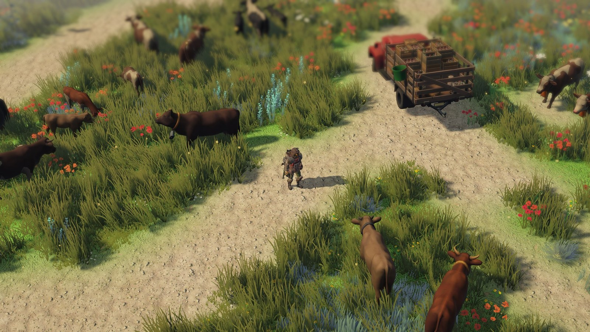
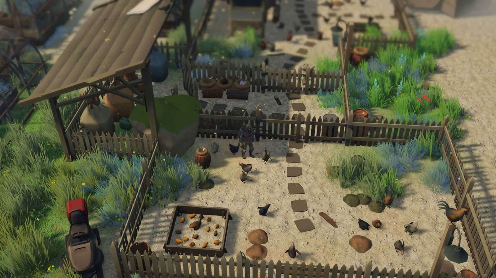
Day 27 · Wed 14 Oct
Total hours: at least 29.8 h (Unity time not measured). Running total: 609 h.
- 442 standard balconies across 20 apartment blocks; rails climb like window sills.
- A wall ladder on every block, ground to roof.
- 101 wall ledges switched back on.
- Awnings, fake balconies and outside stairs removed.
- All 20 blocks climbed to the roof in Play and saved.
- About 2 million grass cells over 44 terrain tiles; no bare ground left.
- Capital turned into a swamp: mud, reeds, moss, water on the streets.
- All 2,291 town buildings stream in; main build at 93,000 objects.
- Start area 64 fps; capital apartments 25 to 36 fps.
- 8 dead-end ledges left in two courtyards, decision pending.
Day 27 was the climbing day, with every other job paused. All 20 apartment blocks were reworked so any building climbs the same way: one standard fire-escape balcony, a metal ladder from ground to roof, and wall ledges switched back on. Awnings, fake balconies and cosmetic outside stairs were stripped off, so nothing on a wall looks climbable unless it is. All 20 blocks were climbed to the roof in Play and saved into the main build. Every bare patch of ground on the island was grassed, and the flooded capital became a swamp with water only on the streets. Near the capital apartments the frame rate still drops to 25 to 36 fps, cause not yet found.
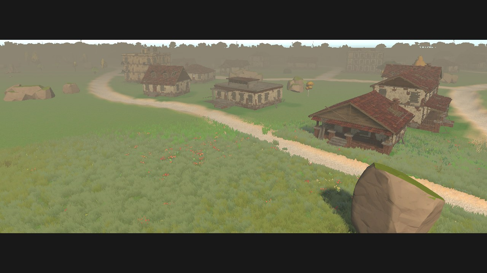
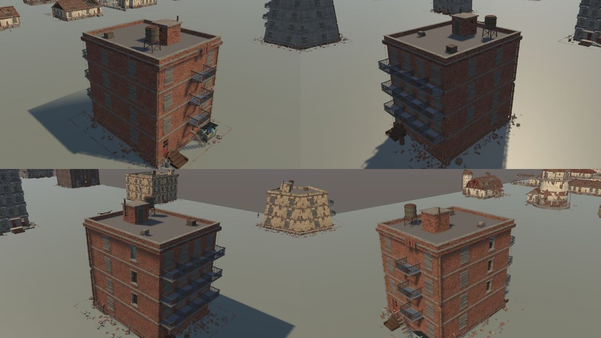
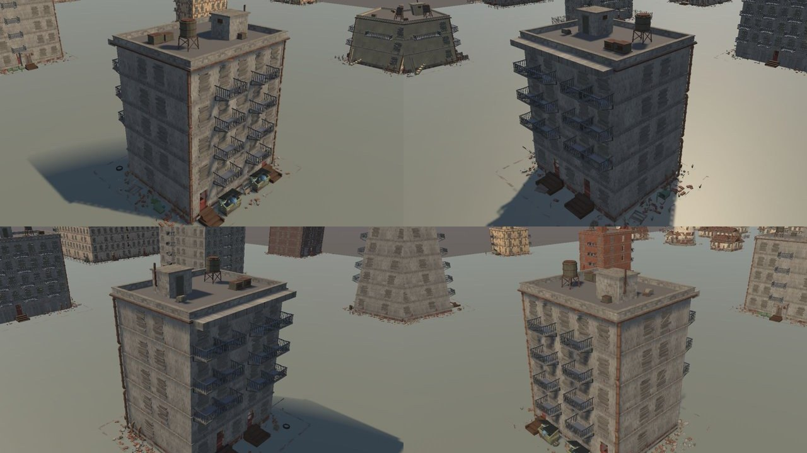
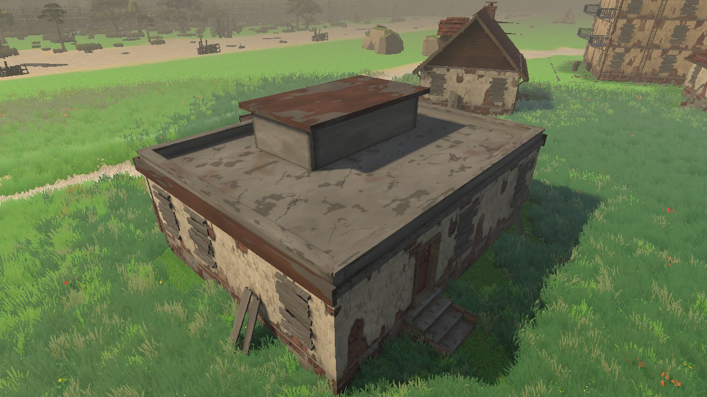
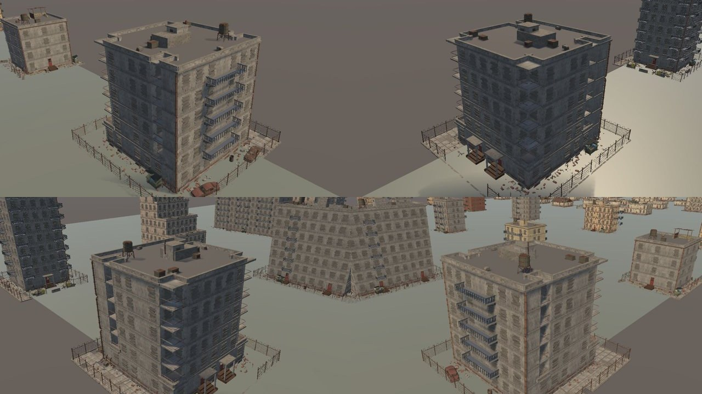
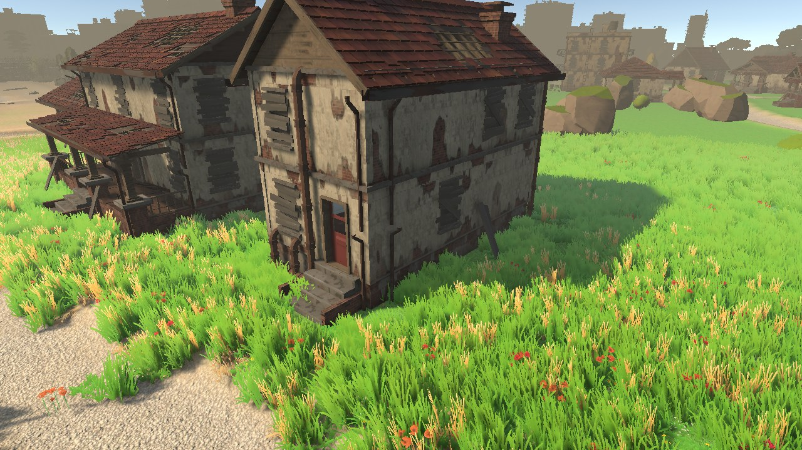
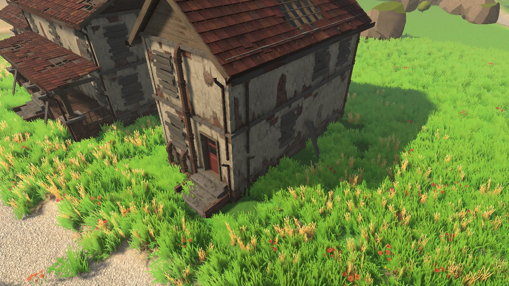
Day 26 · Tue 13 Oct
Total hours: about 40.3 h. Running total: 580 h.
- Towns 60 to 90 fps (was about 11 to 18); leaving Play 9.5 s (was up to 20 minutes).
- 20 apartment blocks built and saved to town; wood gables and porches.
- All 3,006 windows boarded.
- Yard grass, tilt-shift blur and a sharper player shadow.
- Gamepad fixes and better climbing between balconies.
- Quests part 1: journal and two side quests, compiled but not played.
- Capital filled: about 431 blocks inside the wall and 18 outside.
- One road network for 19 towns: 23 links over 12.7 km.
- 455 usable interior doors; rain no longer falls indoors.
- About 2,100 buildings is enough: no more new towns.
- Running out of memory in Play: restart the editor between sessions.
- NPCs and zombies still switched off.
Day 26 brought the performance turnaround and the first quests. Decor is now drawn as GPU instances and distant houses load in the background, which took towns from 11 to 18 fps up to 60 to 90 and cut leaving Play from minutes to under ten seconds. Twenty apartment blocks were built and placed in town, and all 3,006 windows were boarded. Part 1 of the quest system was built with a journal and two side quests, though not yet played. The capital became an overrun quarantine city and was filled overnight with about 450 apartment blocks. One road network now joins all 19 towns, and about 2,100 buildings was judged to be enough.
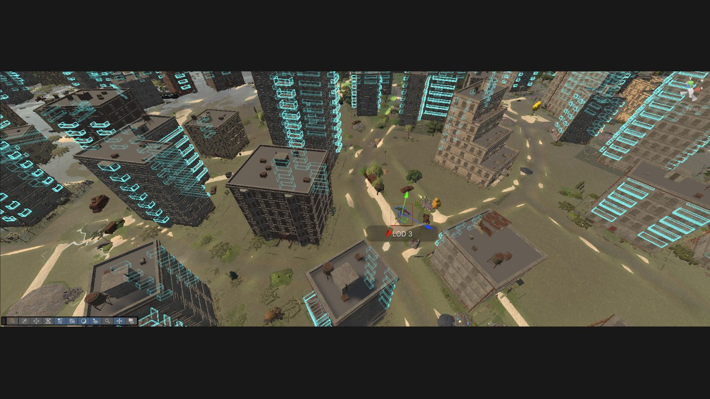
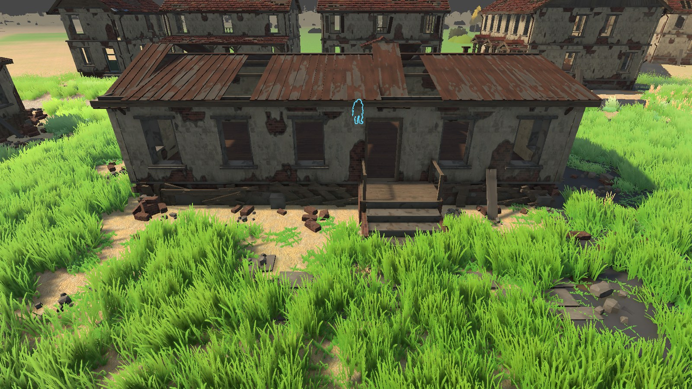
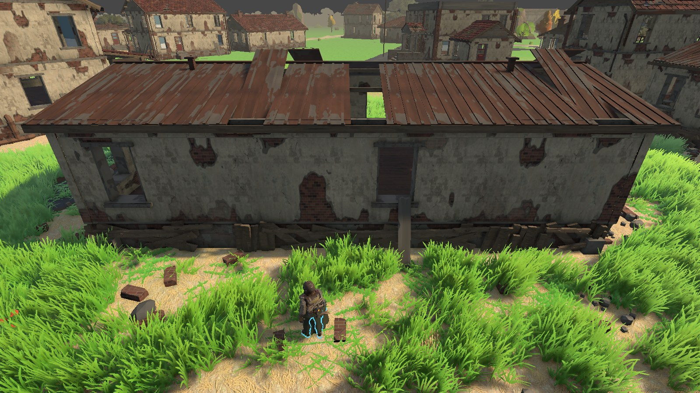
Day 25 · Mon 12 Oct
Total hours: about 45.7 h. Running total: 539 h.
- About 12,000 debris pieces and 58,000 hidden leftovers removed.
- House streamer added; editor tools switched off in the scene.
- Town fps about 11 to 18; objects 1.47 million to 950,000.
- Districts D1 to D8 built: about 1,550 buildings.
- Fog ring to hide grass edges; controller key conflicts fixed.
- Started: furniture, quest plan, dev cheat toolkit, sharper shadow.
- Target set: a stable 60 fps, even if quality drops.
- Two rendering options tried and rejected as much slower.
- Unity froze twice and exiting Play took 14.5 minutes; rule: no scripts to disk during Play.
Day 25 was the big optimisation push. Profiling showed where the cost was, and about 12,000 debris pieces and 58,000 hidden leftover objects were removed. A house streamer was added and editor-only tools were switched off in the scene. Town frame rate rose from about 11 to 18, and the object count fell from 1.47 million to 950,000. Districts D1 to D8, about 1,550 buildings, were built around the capital. Work also started on a fog ring, furniture, a quest plan, a cheat toolkit and a sharper player shadow. Two editor freezes set the rule that no scripts are written to disk during Play.
Day 24 · Sun 11 Oct
Total hours: about 35.4 h. Running total: 494 h.
- Climbing polish; wall run restored.
- Kick in boarded windows; only empty walls climb.
- Planks on 95 percent or more of windows.
- Far meshes merged; about 24,000 fake window lamps removed.
- Loading screen added.
- Save Builder Houses To Town tool finished.
- The developer compiles and plays; threads only write code.
- Finish city generation before the generator licence lapses.
- Frame rate roughly 6 to 8 up to about 12 (uncertain).
Day 24 polished climbing and began the optimisation work. Wall running came back, boarded windows can be kicked in, and only empty walls can be climbed. Doors now open with one key, and window planks were set to cover almost every window. The first optimisation passes merged distant meshes and removed about 24,000 fake window lamps, and a loading screen was added. A tool to save Builder houses into the towns was finished. The developer took over compiling and play-testing, with the AI threads only writing code, and the town generator work was set to finish before its licence ran out.
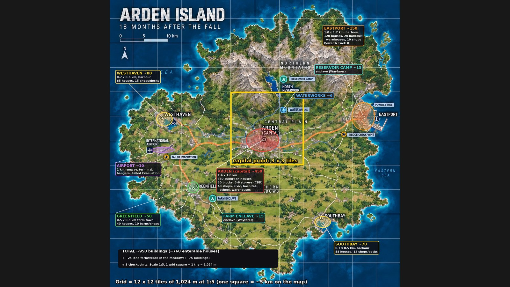
Day 23 · Sat 10 Oct
Total hours: about 42.8 h. Running total: 458 h.
- Dark interiors with a flashlight tried, then put on hold.
- Carriers Builder Tool: houses from modular walls on a grid.
- All houses get wooden floors.
- Opus house interiors stripped and rebuilt with the grid tool.
- Planks can be pried off windows.
- Grass sway checked.
- Unity hung twice; rule: a heads-up before any Unity work and no live code during Play.
Day 23 produced the house builder. Fully dark house interiors lit only by a flashlight were tried and parked as good enough for now. The Carriers Builder Tool was made to build houses from modular walls on a grid, all with wooden floors. The Opus houses looked good outside but were hard to work with inside, so their interiors were stripped and rebuilt with the grid tool. Planks can now be pried off windows. Two Unity hangs, one from a forced refresh and one from code running during Play, set a new rule: no live code runs while the game is playing.
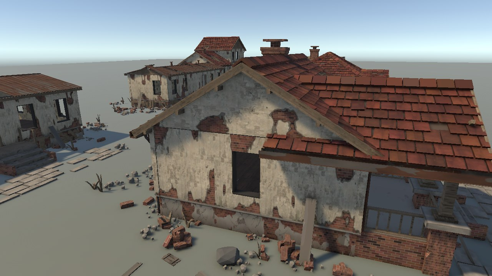
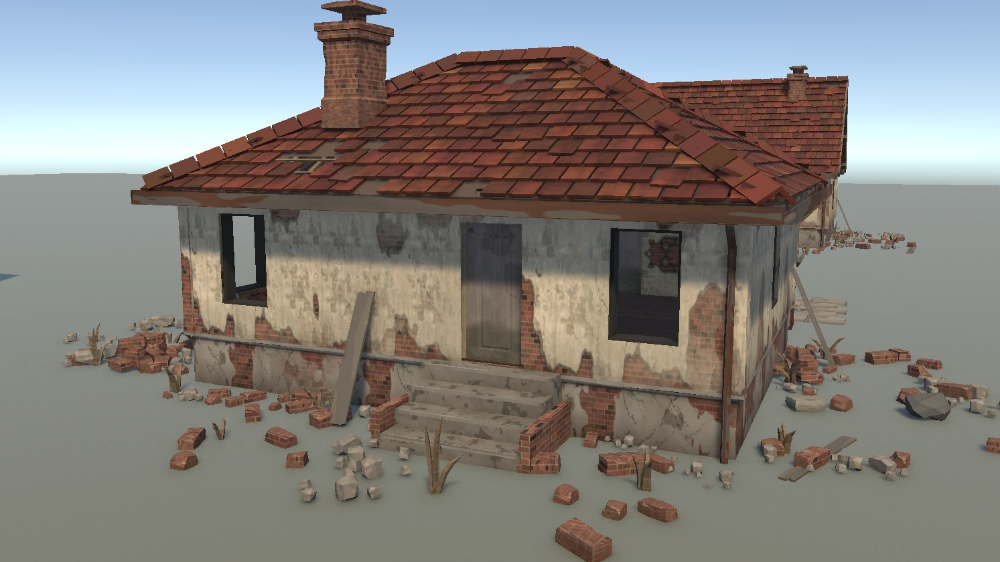
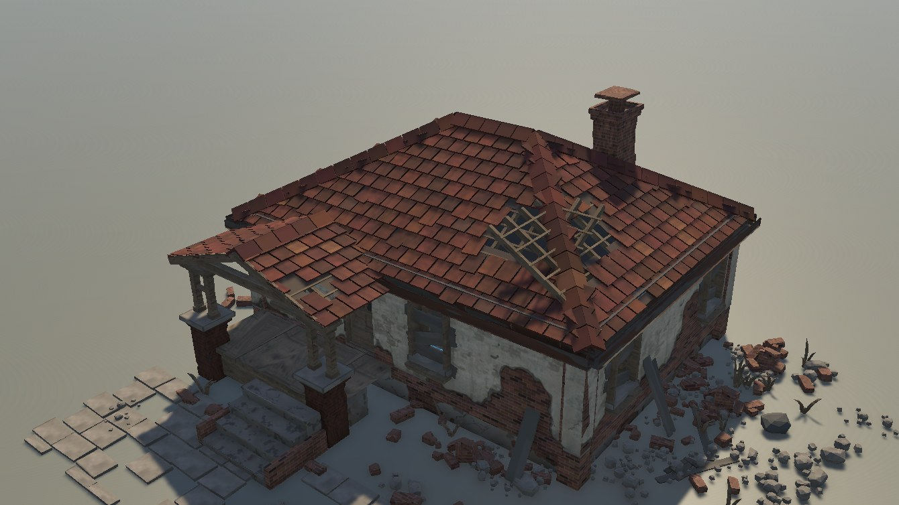
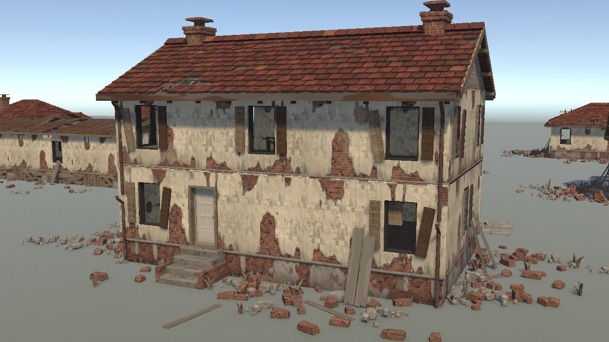
Day 22 · Fri 9 Oct (order within the day uncertain)
Total hours: about 40.8 h. Running total: 415 h.
- Stealth Focus mode; doors and quiet actions no longer break it.
- Stealth greyscale look planned.
- Colour grading started, one grade per biome.
- 50 Blender buildings made with Claude Opus and exported.
- Storm placed 310 of them across 7 areas.
- Melee combos for all weapons and a kick finisher; stomp removed.
- Area loot, rooms and stealing inside settlements.
- Main menu slideshow and a "Kodecco Games presents" intro.
Day 22 focused on stealth and colour. A stealth Focus mode was built and fixed so doors and quiet actions no longer break it, and a greyscale stealth look was planned. Colour grading started, with a grade per biome. Buildings generated in Blender with Claude Opus were tested, 50 were exported, and a Storm run placed 310 of them across seven areas. Combat gained melee combos for every weapon and a kick finisher. Settlements got area loot, rooms and stealing, and the main menu gained a slideshow and a Kodecco Games intro.
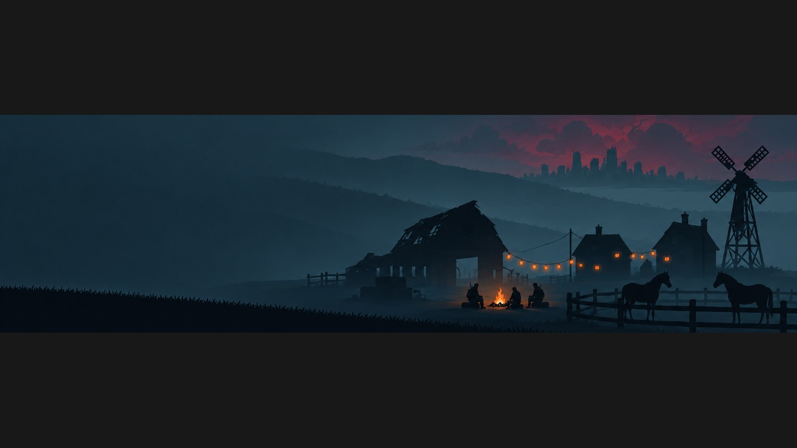
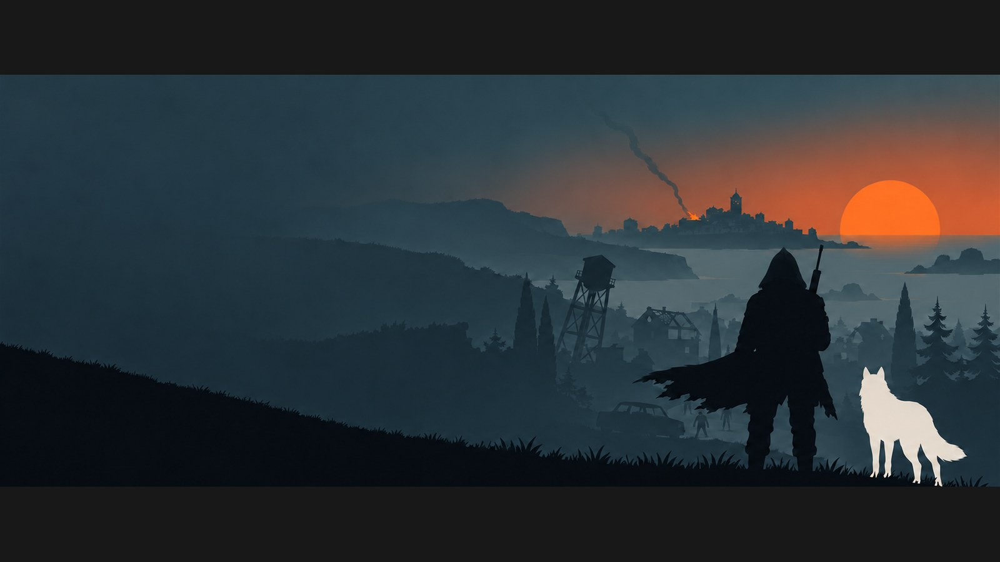
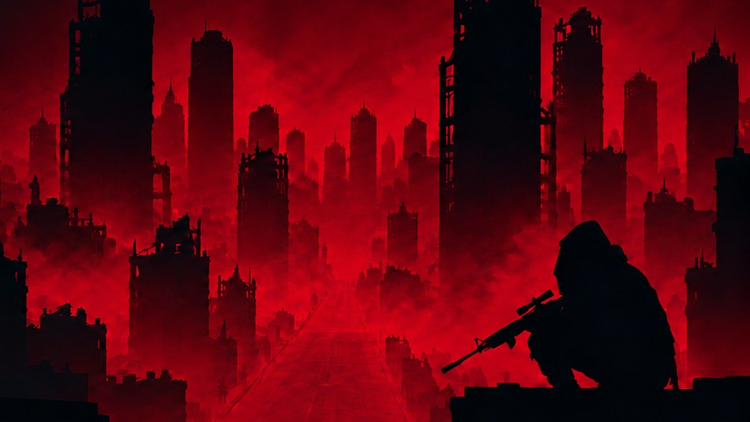
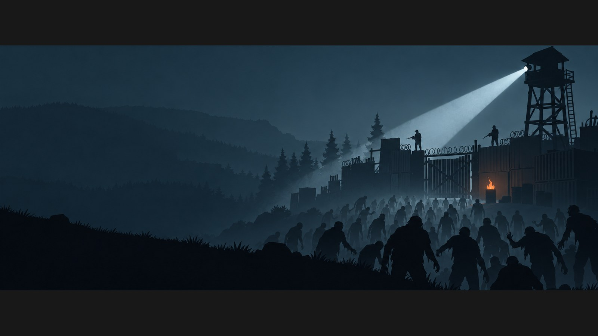
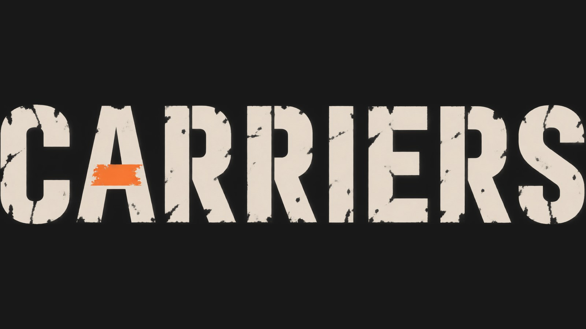
Week 3
Day 21 · Thu 8 Oct
Total hours: about 61.6 h. Running total: 375 h.
- About 15 overnight threads ran, one feature each.
- Ladder climbing, prone crawl, binoculars and body search.
- Blood system and a player outline when hidden.
- Weapon hand placement tool.
- 83 animals stylised; all 70 zombie types aged and muddied.
- Northmarch: 40 NPCs, barracks, homes, lumber yard and 12 workers on a day and night routine.
- The Northmarch setup copied to the 6 other walled bases.
- Shelf glow at Northmarch fixed (broken mesh tangents blown up by bloom).
- Dark UI main menu with Developer Mode.
- Island map and capital district plan made with ChatGPT.
- Goal set: finish one settlement, then copy it to the others.
Day 21 was a big overnight batch of about fifteen AI threads, each on its own feature. Climbing gained ladders, the player can now crawl prone, and binoculars and body searching were added. A blood system, a player outline when hidden behind objects, and a tool for placing weapons in the hand went in. On the art side, 83 animals got a stylised look and all 70 zombie types were aged with mud and grime. The walled base at Northmarch was populated with 40 Emerald NPCs on a day and night routine, play-tested, and copied to the six other walled bases. A Dark UI main menu with a Developer Mode was built, and the island map and capital district plan were drawn up with ChatGPT.
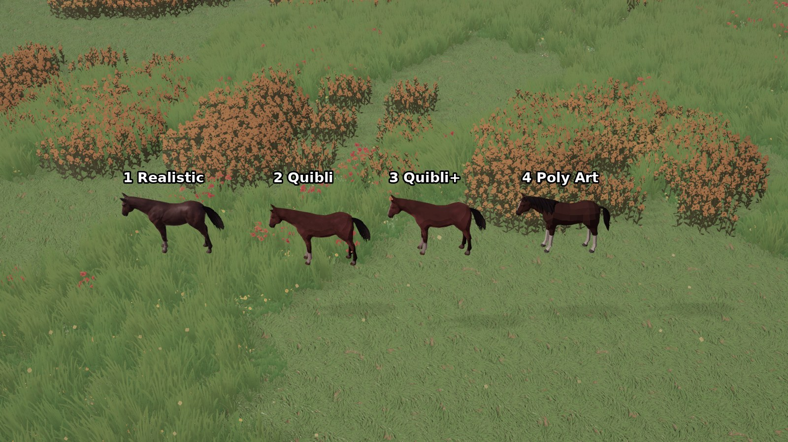
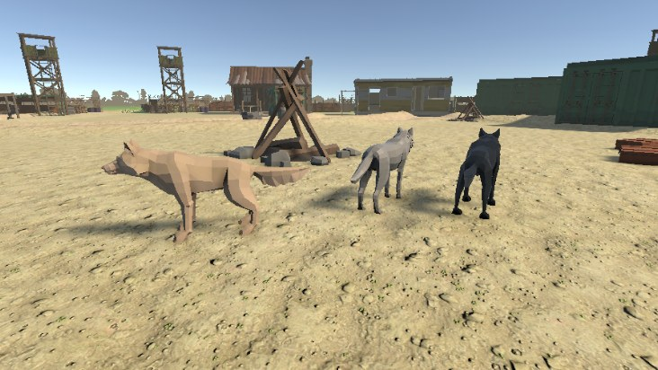
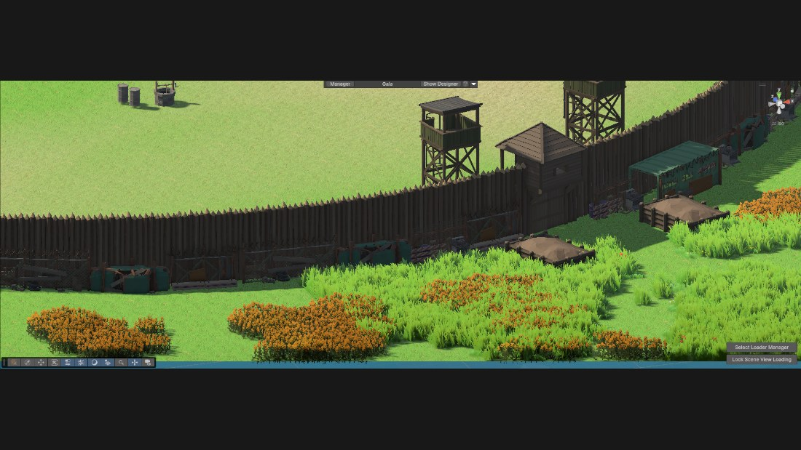
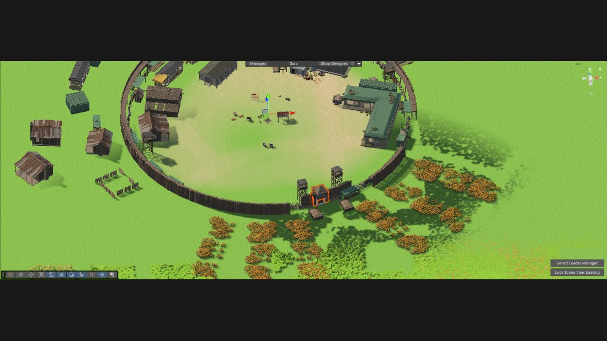
Day 20 · Wed 7 Oct
Total hours: about 34.5 h. Running total: 313 h.
- Hand-built homes in all 7 fortresses; NPCs engage only on a threat or a long stare.
- NPC performance: body reuse, distance detail levels, staggered updates; autosave from 12 ms to about 1 ms.
- Rig Test tool: 131 actions and 70 zombie types.
- Code audit: 475 scripts.
- Gang base live in the farm barn: claim, recruit, build.
- Cloth cloak for the player; new executable.
- NPCs switched off over lag; revamp moved to Emerald AI.
- Zombie work parked; dev journal started.
Day 20 opened the gang base and then switched the NPCs off. Homes were hand-built inside all seven fortresses, and NPC performance was improved with body reuse and a staggered update. A Rig Test tool was made to check items in hands across 131 actions and 70 zombie types, and a code audit counted 475 scripts. The gang base went live in the farm barn, where the player can claim it, recruit by talking and build. The player also got a cloth cloak under the backpack, and a new executable was made. Lag freezes were then blamed on the 1,000-NPC world, so the NPCs were switched off with their code kept, and a revamp on Emerald AI began. Zombie work was parked, and the dev journal started.
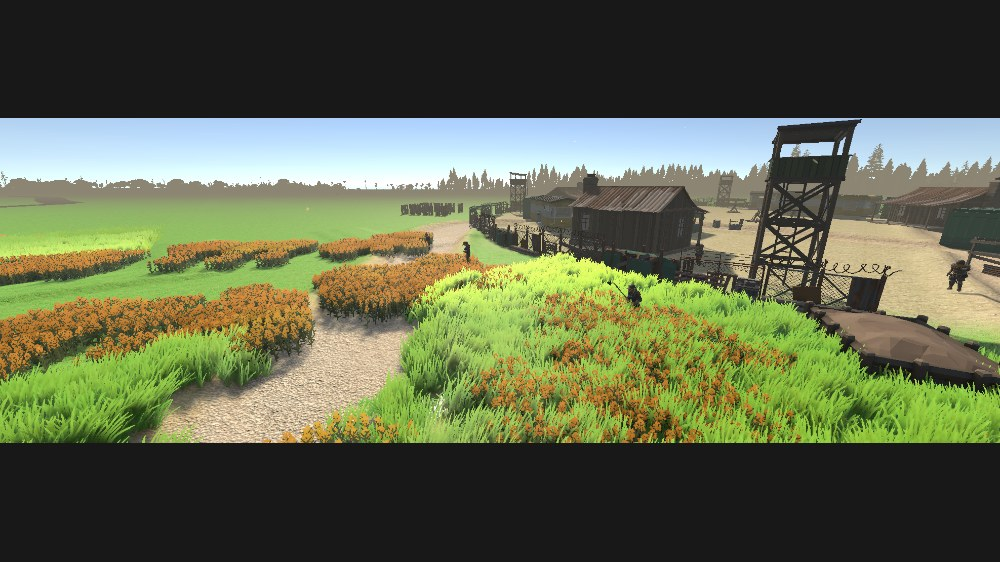
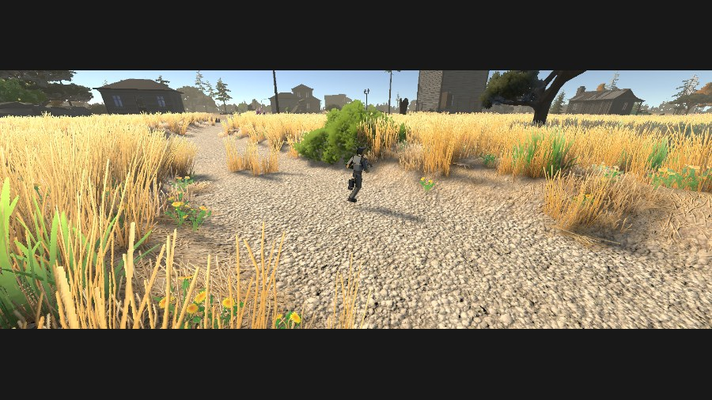
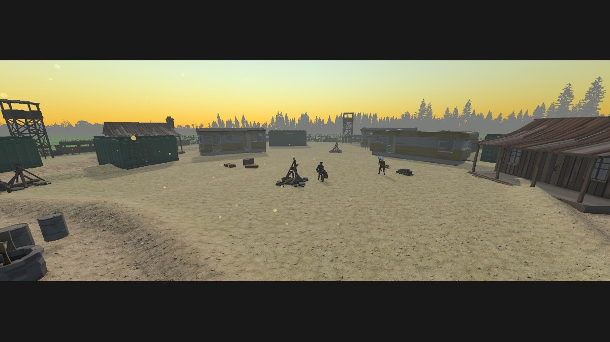
Day 19 · Tue 6 Oct
Total hours: about 52.1 h. Running total: 278 h.
- World named Yangs Island.
- Stylised grass and fields; all 7,369 cypress removed; 15,500 spruce in the north.
- Weather Director: clear, cloudy, rain, storm, fog, lightning and a wet look.
- Regional snow: always in the highlands, never in the south.
- Painted town roads; 152 doors fitted into 76 buildings.
- 19 types of searchable loot container in buildings.
- 1,000 NPCs in 7 fortresses, 14 outposts and 91 camps.
- Horror stingers removed; zombies switched off for now.
Day 19 remade the island's look and filled it with people. Work moved into a Claude Project, with many threads running in parallel from here on. The world was named Yangs Island, every one of its 7,369 cypress trees was replaced by stylised grass and wildflower fields, and 15,500 spruce were planted in the north. A Weather Director brought clear skies, rain, storms, fog and lightning with a wet look, plus regional snow; the developer said "I LOVEEE the weather system." Town roads became painted tracks, 152 doors were fitted and searchable loot containers went into buildings. By night the island held 1,000 NPCs across 112 places, with reputation, raids, trade and morale. Zombies were switched off so the game could be played without them first.
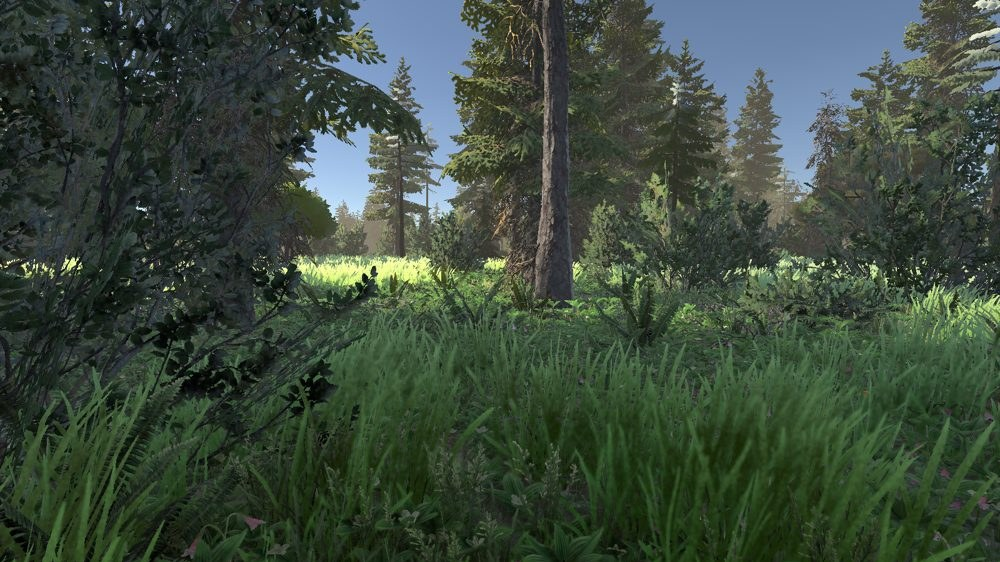
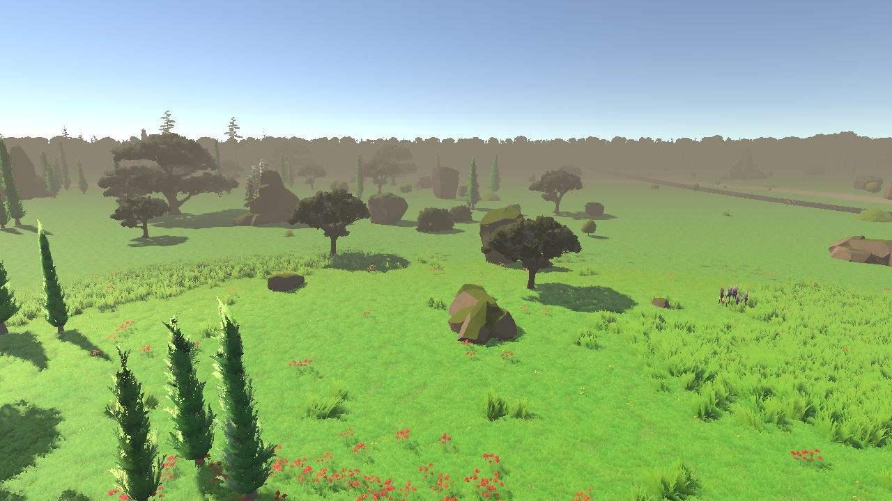
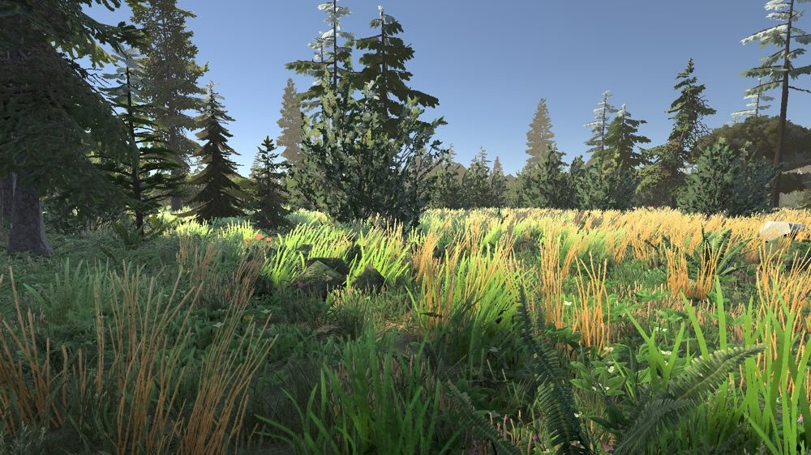
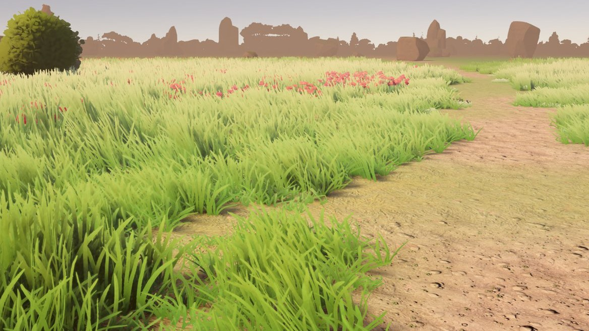
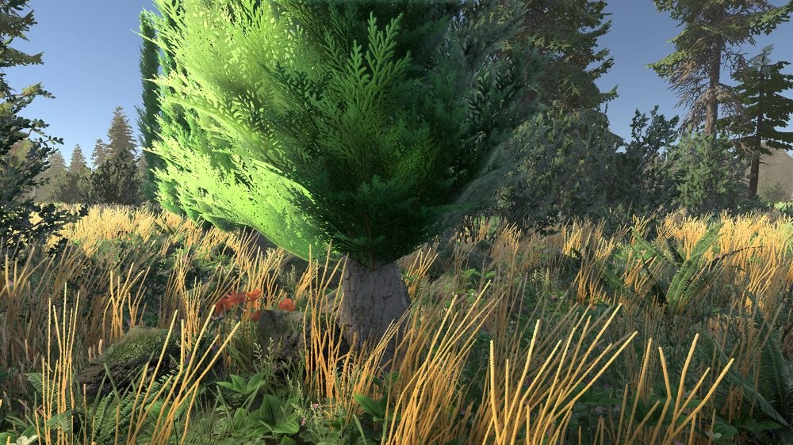
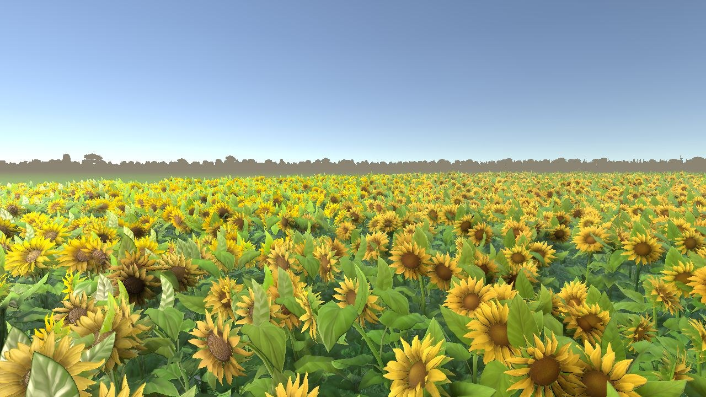
Day 18 · Mon 5 Oct
Total hours: about 9.2 h. Running total: 226 h.
- Capital cleared: about 550 towers and 3,366 floating vines off.
- Military site turned into 58 prefabs with interiors.
- Storm building library of 285 prefabs.
- Progress estimate: about 30% of a full game, 45% of a vertical slice.
- 7-phase, 12-week tracker; rule: one focus at a time.
- Weathering studio: wear by building type, door and window cutting, searchable furniture, 149 enterable buildings.
- Game world switched to Build 1.0.
- Unity hung for about five hours on a Storm bug.
Day 18 cleared the capital and organised the project. About 550 towers and 3,366 floating vines were switched off, while the swamp inside the wall was kept. The military site became 58 prefabs with interiors, and a library of 285 buildings was assembled for Storm to draw from. A progress review put the game at roughly 30% of a full game, and a 7-phase, 12-week tracker was created with the rule "one focus at a time". The Weathering studio can now apply wear to every building of a type, cut doors and windows and add searchable furniture; the developer called it "actually really good." The game's world switched to the Build 1.0 scene. Unity hung for about five hours on a Storm bug, and since then Claude restarts Unity itself.
Day 17 · Sun 4 Oct
Total hours: about 12.3 h. Running total: 217 h.
- Git dropped after its history filled the disk; repo archived, backups moved to another drive.
- See-through tunnel replaced by a player silhouette; dollhouse kept for interiors.
- Zombies give up after about 20 s without a new sound, or 10 s of watching without closing in.
- Three NPC brains drafted by ChatGPT, reviewed by Claude, all tests passed.
- Storm lays streets; a custom filler places whole buildings.
- Six towns built.
- Capital wall rebuilt as an oval; flood water rises and dips; 797 skyscrapers off.
- Storm's road tool froze Unity twice.
Day 17 was the day version control was dropped. The project had grown so large that its Git history filled the disk, so the history was removed, the repo archived and backups moved to another drive. The see-through tunnel around the player was replaced by a player silhouette, with the dollhouse view kept for interiors, and zombies gained an attention span. ChatGPT drafted three NPC brains from Claude's framework, Claude reviewed them, and all passed their tests. Storm's licence arrived, but its own houses looked wrong, so Storm now lays the streets and a custom filler drops whole apocalypse buildings into the lots. Six towns were built, and overnight the capital wall became an organic oval, the flood gained a tide and 797 skyscrapers were switched off. The developer's verdict: "beautiful, the town is in."
Day 16 · Sat 3 Oct
Total hours: about 13.5 h. Running total: 205 h.
- Beach intro planned: the player washes ashore.
- Gravel paths: 337 links, about 123 km across 43 tiles.
- Character creator: layered clothing, colour picking, faction buttons.
- Openable doors and a main menu.
- Build Mode and the Weathering tool inside the game executable; a test barn got 79 wear pieces.
- NPC simulation at real scale: 8 km map, 15 towns, about 1,500 agents.
- Evolution lab: 3,000 people over 20 years, giving a 110-NPC roster.
- Storm town generator licensed; Build 1.0 created as its test scene.
Day 16 planned the roads and the opening of the game, and brought in a town generator. The beach intro, where the player washes ashore, was planned. A gravel path network grew to 337 links and was painted across 43 terrain tiles, about 123 km of paths in total. The character creator gained layered clothing, colour picking and faction buttons, doors started opening, and a main menu arrived. Build Mode and the Weathering tool were both brought into the game executable, and a test barn was given 79 pieces of wear. An NPC simulation was rebuilt at real scale, and an evolution lab that simulated 3,000 people over 20 years produced a roster of 110 NPCs. The Storm town generator was licensed, a Build 1.0 scene was created to test it, and the project was backed up overnight.
Day 15 · Fri 2 Oct
Total hours: about 16.5 h. Running total: 191 h.
- Stranger NPCs on one survivor brain with camps, needs and moods.
- Hostility meter 0 to 100: warning at 50, firing at 90.
- Escalation: warning, second warning, warning shot, attack.
- Calm them with a gesture, food or water; they join the gang at 20 or below.
- Repeat visits make NPCs suspicious, then paranoid.
- Player death screen and respawn.
- Animals graze, drink, rest, herd and flee zombies.
- 111 voice clips generated with ElevenLabs; six voice sets prepared.
Day 15 gave the NPCs a personality and a voice. Stranger NPCs, survivors with no faction, were built on one shared survivor brain with camps, needs and moods. Each one carries a hostility meter from 0 to 100 that warns at 50 and opens fire at 90, with a ladder of warnings and a warning shot before an attack. The player can calm them down with a gesture or by giving food and water, and at 20 or below they will join the player's gang; visiting too often makes them suspicious, then paranoid. A death screen and respawn were added, and animals learned to graze, drink, rest, herd and flee from zombies. 111 voice lines were written in a hardened-survivor tone, voiced with ElevenLabs and wired into the game, with six voice sets prepared.
Week 2
Day 14 · Thu 1 Oct
Total hours: about 13.3 h. Running total: 175 h.
- Companion dog that follows the player and takes orders.
- Fruit trees with fruit that can be picked.
- Pilot for building interiors.
- Military site ageing planned in a Cowork session.
- Claude could not reach Unity from Cowork, so it handed the job on as a prompt.
Day 14 added a companion and some life to the countryside. A companion dog arrived that follows the player and takes orders. Fruit trees were planted, and their fruit can be picked by hand. A pilot for building interiors started, to test how the inside of houses would work. Ageing the military site was planned in a Cowork session. Claude could not reach Unity from Cowork, so it wrote a ready-made prompt for a fresh chat to do the work instead.
Day 13 · Wed 30 Sep (approximate)
Total hours: about 6.2 h. Running total: 162 h.
- Puddle ripples and water splashes.
- Perimeter wall around the swamp city, with rust and vines.
- Waterlogged city installed in the main world.
Day 13 finished the flooded capital. Puddles now ripple, and moving through water throws up splashes. The swamp city was closed in by a perimeter wall, dressed with rust and climbing vines. With those pieces done, the waterlogged city was moved out of its test scene and installed in the main world. It was a short working day, but it turned the flood from a test into part of the island.
Day 12 · Tue 29 Sep (approximate)
Total hours: about 8 h. Running total: 155 h.
- 1,531 facades re-textured with a ten-tone concrete, plus rooftops, steps and apartment detail.
- See-through tunnel around the player and a dollhouse view inside buildings.
- Capital flooded knee-deep: 1,344 × 832 m in 273 water tiles.
- Reeds, lily pads and debris in the flood water.
- Day and night cycle.
Day 12 was the city's big visual day. 1,531 building facades were re-textured with a ten-tone concrete that wraps evenly over any shape, along with new rooftops, steps and apartment detail. A hybrid occlusion system went in: a see-through tunnel opens around the player outside, and a dollhouse view cuts open the building the player is in. The capital was flooded permanently, knee-deep across an area of 1,344 by 832 metres. The flood is made of 273 water tiles dressed with reeds, lily pads and floating debris. A day and night cycle was added the same day.
Day 11 · Mon 28 Sep (approximate)
Total hours: about 12.3 h. Running total: 147 h.
- Three NPC creator scenes: Sidekick, Low Poly and Synty Low Poly.
- Batch character builds, plus a separate creator executable.
- Combat demo arena for testing fights.
- Low-hanging mist.
- Safety checks added to Build Mode.
Day 11 was about tools for making characters. Three NPC creator scenes were built, one for each character set in the project: Sidekick, Low Poly and Synty Low Poly. Each creator can build characters in batches, and the creators were packaged as their own separate executable. A combat demo arena was set up for testing fights away from the main world. Low-hanging mist was added to give the ground some atmosphere. Build Mode also gained safety checks so placing things is less likely to break a scene.
Day 10 · Sun 27 Sep (approximate)
Total hours: about 10.2 h. Running total: 135 h.
- Build Mode: place props in Play from a palette of 1,049 items.
- Auto-save per area and import into the scene.
- Paint mode, delete, God mode and invisibility.
- Noise system with rings and listeners; zombie sight.
- Player vitals and ivy coverage.
Day 10 added Build Mode, the tool used to dress the island ever since. In Play, it opens a palette of 1,049 props that can be placed straight into the world. Each area saves automatically and can be imported into the scene, with a paint mode, delete, God mode and invisibility for working without interruption. A noise system with noise rings and listeners was built alongside zombie sight. Player vitals and ivy coverage were also added.
Day 9 · Sat 26 Sep (approximate)
Total hours: about 16 h. Running total: 125 h.
- Town generator written, then handed to Antigravity.
- Tool to fill the capital with tall buildings.
- Biome bands painted; natural ground pass.
- Ivy drawn with overgrowth instancing.
- Capital blocks mapped; muted city colours tested.
Day 9 began the city. A town generator was written and later handed to Antigravity to continue. A second tool filled the capital with tall buildings. Biome bands were painted, the ground was given a more natural pass, and ivy was drawn with overgrowth instancing. The capital's blocks were mapped out and a muted colour scheme for the city was tested.
Day 8 · Fri 25 Sep (approximate)
Total hours: about 15.2 h. Running total: 109 h.
- Zombies drop loot where they fall; the corpse sinks away.
- Loot tables, rarity colours, consumables and loot saving.
- Item catalog fed by a small web app for culling items.
- Player noise, minimap, quad bike driver, player slide.
- Player voice and zombie audio.
- World plan of towns, zones and roads.
Day 8 was about loot. Zombies now drop items where they fall, the corpse sinks into the ground, and the player walks over to pick things up. Behind that sit loot tables, rarity colours, consumables and saving. The item catalog is fed by a small web app made to cull the item list. Player noise, a minimap, a quad bike driver, a slide, and player and zombie audio were added. A world planning tool produced the plan of towns, zones and roads for the island.
Week 1
Day 7 · Thu 24 Sep (approximate)
Total hours: about 14.5 h. Running total: 94 h.
- Backpack inventory and an 8-slot weapon wheel.
- Gun aiming at the cursor with a cover check (45 checks passed).
- Pistol and melee grips retuned; punches chain.
- Zombies: mocap movement, gore, ragdolls, lunge attack (12 damage), two running styles.
- HUD and weapon wheel work on horseback.
- Character creator is the start of the game; Save & Play opens the island.
- First standalone build.
- 41 scripts saved, the busiest day of week 1.
Day 7 turned the project into a playable game. A backpack inventory and an eight-slot weapon wheel were added, with guns aiming at the cursor and checking for cover. Melee and pistol grips were retuned and unarmed punches now chain. Zombies got mocap walking and running, death gore, ragdolls, a readable lunge attack and two running styles. The HUD and weapon wheel kept working on horseback. The character creator became the game's front door, with Save & Play opening the island, and the first standalone build of Carriers was made. Claude and Antigravity both worked on it, and with 41 scripts saved it was the busiest day of the first week.
Day 6 · Wed 23 Sep (approximate)
Total hours: about 11.7 h. Running total: 79 h.
- Grass streaming rebuilt: 16 m cells, GPU culling, 3 detail levels with fade-in.
- Hunting zoom from 9 to 42 m.
- Survival camera set: 38° pitch, 45° yaw, 30° field of view, 22 m arm.
- Movement relative to the camera; right mouse to aim.
- Animals placed per biome; companion horse with riding.
- Combat blood, military weapons, throwables and world pickups.
Day 6 fixed two things the game still relies on. Grass streaming was rebuilt around 16 m cells with GPU culling, three detail levels and fade-in, so turning the camera no longer reloads the grass. The top-down survival camera was set at a 38° pitch, 45° yaw, 30° field of view and a 22 m arm, with the right mouse button to aim. That angled camera is the one the game still uses. Animals were placed per biome, and a companion horse that can be ridden was added. Combat blood, military weapons, throwables and pickups in the world also went in.
Day 5 · Tue 22 Sep (approximate)
Total hours: about 9.8 h. Running total: 68 h.
- Third-person world pass and forest camera pass.
- Grass blended into the soil.
- Alpine layout for the north of the map.
- First dirt paths; coastline redone.
- Bow animator.
Day 5 was a pass over the whole world. The game was tried in a third-person view and the camera tuned for forests. Grass was blended into the soil so it no longer sat on top like a carpet. The north of the map got an alpine layout. The first dirt paths were laid, the coastline was redone, and the bow received its own animator.
Day 4 · Mon 21 Sep (approximate)
Total hours: about 14.5 h. Running total: 58 h.
- Open world generated: 64 tiles of 1,024 m, about 75 km², still in use.
- World migrated and audited; sea level normalised.
- Wildlife with hearing, hunting checks and coastal animals.
- Stealth: player scent and hiding in grass.
- Zombies: vision balance, chase speeds, fence vault.
- First inventory item definitions.
Day 4 is when the island came into being. The open world was generated with a terrain tool as 64 tiles of 1,024 m each, about 75 km², and those same tiles are still the world today. The scene was then migrated, audited for performance and gameplay, and its sea level levelled out. Wildlife arrived with hearing and hunting behaviour, including animals along the coast. Stealth gained player scent and cover from tall grass. Zombies got better vision, tuned chase speeds and the ability to vault fences, and the first inventory items were defined.
Day 3 · Sun 20 Sep (approximate)
Total hours: about 15.2 h. Running total: 43 h.
- Coastline sand painter, sea-level fix and terrain smoother.
- Biome maps painted; box grass painter added.
- Tall meadow grass that flattens as the player walks through.
- Slope fix applied to the world scene.
Day 3 was about terrain tools. A painter for coastline sand, a sea-level fix and a terrain smoother were written. Biome maps were painted by hand, and a tool for painting grass in boxes was added. Tall meadow grass with trampling went in, the first grass that reacts to the player walking through it. A slope fix was then applied across the world scene.
Day 2 · Sat 19 Sep (approximate)
Total hours: about 16.8 h. Running total: 28 h.
- Ocean and sky that follow the camera.
- Grass painting, ground detail and biome scatter tools.
- Tree collider fixes and a terrain performance tool.
- Melee set up; bow fixed.
- First zombies, made from a character pack, with a glow.
- Quad bike placed; motorbike animations imported.
- First profiler captures.
Day 2 built the backdrop and the first enemies. An ocean and sky were made to follow the camera. Tools for painting meadow grass and scattering ground detail were written, and tree colliders were fixed. Melee was set up and the bow repaired. The first zombies were generated from a character pack and given a faint glow, and a quad bike was placed in the world. The first performance captures were also taken, an early sign that frame rate would need watching.
Day 1 · Fri 18 Sep 2026 (approximate)
Total hours: about 11.2 h. Running total: 11 h.
- Unity project created with its first world scene.
- First scripts: bow, isometric character and camera, stealth setup.
- Animators for prone, slide and traversal.
- Training dummy, damage system and zombie spawn data.
- Nothing playable yet.
Day 1 was the start of the Unity project. A single world scene was created and the first scripts went in. They covered a bow, an isometric character and camera, and a stealth setup. Animators for going prone, sliding and climbing were added, along with a training dummy, a damage system and zombie spawn data. Nothing was playable yet, but fighting, an angled camera and hiding, the three ideas that define the game, were all there from the first day.
Status at Day 72
Total hours to date: about 1214. Percent estimates were dropped at this update; the table now gives the state of each area only.
| Area | State |
|---|---|
| World, terrain, look | Island, biomes, weather, snow; overgrown roads baked into every road tile; nature reclaiming towns |
| Towns and buildings | 19 towns with roads; work moved to the new workshop houses; pipes can be placed in build mode |
| Player, climbing, controls | Root-motion movement; wall, ledge, roof and pipe climbing with hand-posed Blender clips; slide trip |
| Combat | Melee, bow and guns; block or dodge by weapon type; gun damage by class; mark ring and Mark and Execute; gun kick combo |
| Weapons and carry | One long gun on the back, short gun on the back hip, pistol and knife on the hips; seven-wedge Q wheel; 48 named guns |
| Inventory and clothing | Bag and equipment rebuilt; clipping fix chosen and in testing; Item Creator for new clothing |
| NPCs, zombies, animals | Zombies climb walls and have readable tells; NPC talk being rewritten around honour; NPC Studio and face desk for designing survivors |
| HUD and UI | Scavenged HUD with five shields, health, stamina and a visibility box; markers only show what you can see |
| Menus, saves, build | Developer menu only; no full save system; no public build |
Many recent features are installed but still being play-tested. Things on this page can change or be cut. Risks: a lot of new combat and clothing work landed in one week and needs a full play-through together; Unity editor memory.
Credits
Carriers is built on the Unity engine and a large number of third-party asset packs, bought and free. The list below is by publisher, as recorded in the project on 13 October 2026 and updated as new packs arrive. All packs remain the property of their publishers and are used under their store licences.
Engine and tools - Unity 6 (6000.6.1f1) with the Universal Render Pipeline, ProBuilder, Cinemachine, Animation Rigging, AI Navigation, Splines, FBX Exporter, Input System, Shader Graph and VFX Graph. - Fast Script Reload. Unity MCP (CoplayDev), which lets Claude drive the Unity editor.
World, terrain and nature - Procedural Worlds: Gaia, GTS and Storm (town and city generator with its Building Generator, City Generator, Area Populator and Terrain plugins). - Purple Sky: Stylized Cypress Valley (the earlier grass, ground and field look). - A+ Grass (URP), the default grass from 20 October. - Real Ivy 2 (ivy, vines and moss on the houses). - Magica Cloth 2 (cloth motion for capes and cloaks, from 31 October). - Poly Haven: CC0 ground textures used for the ruined town roads. - Spruce Forest. Global Snow and Global Snow 2. Pure Volumetric Fog (BK). SnowStarGames Gaia Spawner. - Biomass, Biomass Webs, Mossy Piles and Roots Constructor (overgrowth and decor).
Buildings - Lakefell modular building kit (house rebuild from 20 October).
Synty Studios (POLYGON) - Apocalypse, City, City Zombies, Construction, Dog, Fantasy Village, Farm, Generic, Military, Nature, Nature Biomes, Palm City, Particle FX, Pirate Realm, Quad Bike, Samurai Empire, Shops, Street Racer, Town, Western Frontier, and the Military Warehouse, Plaza, Prison and Woodland Apocalypse maps. - Sidekick Characters, Interface Apocalypse HUD, Interface Core. - Animation packs: Base Locomotion, Bow Combat, Emotes and Taunts, Goblin Locomotion, Idles, Sword Combat.
Other art packs - Apocalypse Weapons (54 modular guns, replacing the old guns from 31 October). - Polygon-Mega: Survival, Survival Construction, Survival Tools, Medical Kit, Weapon Kit. - Animpic Studio: Poly-Survival Food, Poly-Survival Melee Weapons, POLY-Survival Character. - Toon Series: Toon Farm Pack. - janpec: Animal Pack Deluxe v1 and v2.
Characters, animals and AI - Malbers Animations: Animal Controller, Animals Packs, Horse AnimSet Pro. - Emerald AI. Advanced Zombie AI Pro.
Animation - Yummy Games: Zombie Animations Mocap. - Universal Traversal Anims (Ultimate Traversal). - Kevin Iglesias: Human Animations and IK Helper Tool. - Advanced Crawling Animation. Deadly Kombat (free version). Moto Interaction Anims (free). - Mixamo (Adobe): Kicks, Pistol and Parkour Actions clips.
VFX, shaders and UI - Quibli (stylised shader). RVFX Blood Effects Pack. Vefects Wind VFX URP (free). VFX Pack Impact Wall Coeur (free version). - Dark: Complete Horror UI.
Voice - ElevenLabs for NPC voice lines.
AI assistants - Claude (Anthropic), ChatGPT (OpenAI), Gemini (Google, item icons) and Antigravity, as described at the top of this report.
The building models called "Opus buildings" in this report are the studio's own Blender exports, not a store pack.
Page built 28 November 2026. Source: the studio's daily development log.